1969-cu ilin
iyulunda Azərbaycan SSR-ə rəhbərlik etməyə başlayan Heydər Əliyev ilk növbədə Dağlıq
Qarabağ Muxtar Vilayətinin rəhbərliyini sınanmış kadrlarla gücləndirməyə qərar
verir.
1973-cü ilin payızında Heydər Əliyev Azərbaycan KP MK-nın Dağlıq Qarabağ Vilayət Komitəsinin birinci katibi vəzifəsinə bundan əvvəl Bakıda Kirov Rayon Partiya Komitəsinin birinci katibi vəzifəsində çalışmış Boris Kevorkovun seçilməsini təklif edir. 1973-cü il oktyabrın 12-də Azərbaycan KP Dağlıq Qarabağ Vilayət Komitəsinin Plenumu baş tutmuş və Plenumun qərarına əsasən, Qurgen Melkumyan Dağlıq Qarabağ Vilayət Komitəsinin birinci katibi və Büro üzvü vəzifələrindən azad edilmiş, onun yerinə Boris Kevorkov seçilmişdi.
B.Kevorkov DQMV-nin Qarabağdan olmayan (əslən Şamaxıdan idi) ilk rəhbəri idi və DQMV Vilayət Partiya Komitəsinin birinci katibi postunu öz sələflərindən daha çox – düz 15 il tutmuşdu. Tutduğu vəzifədən yalnız 1988-ci ilin fevralında münaqişə başlayandan sonra azad edilmişdi.
Heydər Əliyev Dağlıq Qarabağın rəhbərliyində bir sıra digər kadr dəyişiklikləri də aparmışdı.
"Vilayət Şurası sədrinin birinci müavini vəzifəsinə bir azərbaycanlını təyin etdim. Mən orada işləməyə azərbaycanlıları göndərirdim", - Heydər Əliyev müsahibələrinin birində belə deyib.
Bu faktı yerli erməni partiya kadrları da təsdiq edirlər. DQMV Xalq Deputatları Sovetinin (1962-1974) sədri vəzifəsində yarım il Kevorkovla işləmiş Muşeq Ohancanyan bunu belə xatırlayırdı: "1973-1974-cü illərdə vilayətin bütün rəhbərliyini Bakıdan "gəlmələr" – Kevorkov, Aslanov, Muradov, Samvelov və başqa "ov"lar əvəz etmişdi [1] .
1973-cü ilin payızında Heydər Əliyev Azərbaycan KP MK-nın Dağlıq Qarabağ Vilayət Komitəsinin birinci katibi vəzifəsinə bundan əvvəl Bakıda Kirov Rayon Partiya Komitəsinin birinci katibi vəzifəsində çalışmış Boris Kevorkovun seçilməsini təklif edir. 1973-cü il oktyabrın 12-də Azərbaycan KP Dağlıq Qarabağ Vilayət Komitəsinin Plenumu baş tutmuş və Plenumun qərarına əsasən, Qurgen Melkumyan Dağlıq Qarabağ Vilayət Komitəsinin birinci katibi və Büro üzvü vəzifələrindən azad edilmiş, onun yerinə Boris Kevorkov seçilmişdi.
B.Kevorkov DQMV-nin Qarabağdan olmayan (əslən Şamaxıdan idi) ilk rəhbəri idi və DQMV Vilayət Partiya Komitəsinin birinci katibi postunu öz sələflərindən daha çox – düz 15 il tutmuşdu. Tutduğu vəzifədən yalnız 1988-ci ilin fevralında münaqişə başlayandan sonra azad edilmişdi.
Heydər Əliyev Dağlıq Qarabağın rəhbərliyində bir sıra digər kadr dəyişiklikləri də aparmışdı.
"Vilayət Şurası sədrinin birinci müavini vəzifəsinə bir azərbaycanlını təyin etdim. Mən orada işləməyə azərbaycanlıları göndərirdim", - Heydər Əliyev müsahibələrinin birində belə deyib.
Bu faktı yerli erməni partiya kadrları da təsdiq edirlər. DQMV Xalq Deputatları Sovetinin (1962-1974) sədri vəzifəsində yarım il Kevorkovla işləmiş Muşeq Ohancanyan bunu belə xatırlayırdı: "1973-1974-cü illərdə vilayətin bütün rəhbərliyini Bakıdan "gəlmələr" – Kevorkov, Aslanov, Muradov, Samvelov və başqa "ov"lar əvəz etmişdi [1] .
Uzun illər
respublikanın dövlət təhlükəsizliyi orqanlarında yüksək vəzifələrdə çalışan İlhüseyn
Hüseynov bunu belə xatırlayırdı: "70-ci illər artıq onunla səciyyəvi idi ki, erməni
millətçiləri "Qarabağ ərazisinin tarixən Ermənistana məxsus olması" məsələsini açıq
şəkildə qaldırırdılar. Bu "fəaliyyət"də əsas rol hərəkətləri Yerevanın millətçi
dairələri tərəfindən istiqamətləndirilən vilayət ziyalıları və gənclərinin bir hissəsinə
məxsus idi.
1972-1974-cü illərdə təkcə vilayətin ərazisində Azərbaycan DTK-nın materialları əsasında 35 nəfər erməniəsilli şəxslə profilaktika işləri aparılmış və onların bir qisminə rəsmi xəbərdarlıq elan edilmişdi" [2] .
Həmişə zamanın nəbzini tutmağa çalışan erməni millətçiləri mühüm siyasi dəyişikliklər dövründə, SSRİ ya da respublikanın tarixindəki əlamətdar hadisələr ərəfəsində ənənəvi olaraq Azərbaycanla sərhədlərin yenidən nəzərdən keçirilməsi məsələsini qaldırırdılar.
Belə hallar bütün ölkə SSRİ-nin yaranmasının 50 illiyini bayram etməyə hazırlaşdığı 1972-ci ildə də, ölkənin yubileyə həsr olunmuş təntənəli tədbirlərdən yenicə özünə gəldiyi 1973-cü ildə də baş verdi. O günlərdə Azərbaycan SSR-də isə "Dağlıq Qarabağ Muxtar Vilayətinin yaradılmasının 50-ci ildönümünün bayram edilməsinə hazırlıq" gedirdi.
Sov.İKP MK-nın Beynəlxalq şöbəsinin rəhbərlərindən biri K.Brutents öz xatirələrində yazırdı: "1972-ci ildə M.Suslovun məzuniyyətdə olduğu və Katibliyin işinin A.Kirilenko tərəfindən aparıldığı bir vaxtda məqamdan istifadə edən Ermənistan rəhbərliyi Qarabağın Ermənistanla birləşdirilməsi təşəbbüsünü rəsmən irəli sürdü. Katibliyin qərarı ilə Ermənistan və Azərbaycan rəhbərlərinə qoyulmuş məsələni birgə araşdırmaq və onun həllini təklif etmək tapşırıldı. Hər iki tərəfdən "dördlük" (MK-nın birinci və ikinci katibləri, Nazirlər Sovetinin və Rəyasət Heyətinin sədrlərindən ibarət) qrupunun rəhbərləri bir həftəsonu ikigünlük (respublikalardan hər birinin ərazisində bir gün olmaqla) görüş keçirdilər, lakin heç bir razılığa gəlmədilər. Gözlənildiyi kimi, azərbaycanlı nümayəndə heyəti Yerevanın təklifini qətiyyətlə rədd etdi. Nəhayət, tərəflər erməni tərəfinin təzyiqi ilə yenidən, lakin bu dəfə katibliyin qərarını, heç olmasa, nəzərə alaraq, birlikdə hər hansı bir kiçik kağız parçasının hazırlanması üçün daha dar tərkibdə görüşməyə dair razılığa gəldilər. Lakin planlaşdırılan görüş baş tutmadı: Azərbaycan rəhbərləri Mineralnı Vodıda istirahət etməkdə olan Suslovun yanında getdilər, o isə Moskvaya qayıdan kimi Brejnevin Yerevana "öz müraciətini geri çəkmək" göstərişi verməsinə nail oldu. Erməni tərəfi bu göstərişə əməl etdi" [3] .
1972-1974-cü illərdə təkcə vilayətin ərazisində Azərbaycan DTK-nın materialları əsasında 35 nəfər erməniəsilli şəxslə profilaktika işləri aparılmış və onların bir qisminə rəsmi xəbərdarlıq elan edilmişdi" [2] .
Həmişə zamanın nəbzini tutmağa çalışan erməni millətçiləri mühüm siyasi dəyişikliklər dövründə, SSRİ ya da respublikanın tarixindəki əlamətdar hadisələr ərəfəsində ənənəvi olaraq Azərbaycanla sərhədlərin yenidən nəzərdən keçirilməsi məsələsini qaldırırdılar.
Belə hallar bütün ölkə SSRİ-nin yaranmasının 50 illiyini bayram etməyə hazırlaşdığı 1972-ci ildə də, ölkənin yubileyə həsr olunmuş təntənəli tədbirlərdən yenicə özünə gəldiyi 1973-cü ildə də baş verdi. O günlərdə Azərbaycan SSR-də isə "Dağlıq Qarabağ Muxtar Vilayətinin yaradılmasının 50-ci ildönümünün bayram edilməsinə hazırlıq" gedirdi.
Sov.İKP MK-nın Beynəlxalq şöbəsinin rəhbərlərindən biri K.Brutents öz xatirələrində yazırdı: "1972-ci ildə M.Suslovun məzuniyyətdə olduğu və Katibliyin işinin A.Kirilenko tərəfindən aparıldığı bir vaxtda məqamdan istifadə edən Ermənistan rəhbərliyi Qarabağın Ermənistanla birləşdirilməsi təşəbbüsünü rəsmən irəli sürdü. Katibliyin qərarı ilə Ermənistan və Azərbaycan rəhbərlərinə qoyulmuş məsələni birgə araşdırmaq və onun həllini təklif etmək tapşırıldı. Hər iki tərəfdən "dördlük" (MK-nın birinci və ikinci katibləri, Nazirlər Sovetinin və Rəyasət Heyətinin sədrlərindən ibarət) qrupunun rəhbərləri bir həftəsonu ikigünlük (respublikalardan hər birinin ərazisində bir gün olmaqla) görüş keçirdilər, lakin heç bir razılığa gəlmədilər. Gözlənildiyi kimi, azərbaycanlı nümayəndə heyəti Yerevanın təklifini qətiyyətlə rədd etdi. Nəhayət, tərəflər erməni tərəfinin təzyiqi ilə yenidən, lakin bu dəfə katibliyin qərarını, heç olmasa, nəzərə alaraq, birlikdə hər hansı bir kiçik kağız parçasının hazırlanması üçün daha dar tərkibdə görüşməyə dair razılığa gəldilər. Lakin planlaşdırılan görüş baş tutmadı: Azərbaycan rəhbərləri Mineralnı Vodıda istirahət etməkdə olan Suslovun yanında getdilər, o isə Moskvaya qayıdan kimi Brejnevin Yerevana "öz müraciətini geri çəkmək" göstərişi verməsinə nail oldu. Erməni tərəfi bu göstərişə əməl etdi" [3] .
1972-ci ildə
Yerevandan Moskvaya, Sov.İKP MK-nın Baş katibi L.Brejnevə erməni ziyalılarından məktub
göndərilmişdi. Məktubda "Ermənistan SSR və Dağlıq Qarabağın ayrı-ayrılıqda
mövcudluğu"nun məqsədəuyğun olmadığı qeyd edilirdi.
Məktubu yazanlar məsələ ilə bağlı qısa tarixi arayış verərək, bütün təqsiri "Bakı Sovetinin 1 dekabr 1920-ci il tarixli ədalətli qərarlarını" və "Azərbaycan SSR və Ermənistan SSR hökumətlərinin Dağlıq Qarabağın Ermənistana verilməsi haqqında 1921-ci il tarixli iyun sazişini" guya ləğv etmiş Zinovyev, Bağırov və Beriyanın üzərinə qoyurdular.
Bu şəxslərin təqsirkar kimi seçilməsi təsadüfi deyildi. Zinovyev Stalin repressiyalarının qurbanları sırasında olsa da, 1956-cı ildə keçirilən Sov.İKP-nin XX qurultayından sonra bəraət almamışdı. Bağırov və Beriya isə əksinə, Stalin repressiyalarının əsas təşkilatçıları sayılırdılar.
Bu üsulla, "bolşeviklərin milli siyasətdə buraxdığı bütün səhvləri" adları xalqın düşmənləri siyahısında olan siyasi xadimlərin üzərinə atmaq ermənilər üçün əlverişli idi.
Ən maraqlısı isə ondan ibarət idi ki, əslində, onların soyadları heç vaxt Qarabağla bağlı iclasların iştirakçıları arasında görünmür və 1920-ci illərdə Ermənistanla Azərbaycan arasında ərazi mübahisəsi ilə bağlı partiya yazışmalarında da qeyd edilmirdi.
Bununla yanaşı, müraciətin müəllifləri əmin idilər ki, "respublika sərhədlərinin cüzi dəyişməsi", yəni Dağlıq Qarabağın Ermənistana verilməsi dostluq və qardaşlıq əlaqələrinə mane olmayacaq, çünki "Sovet hakimiyyətinin 50 ili ərzində xalqlarımız beynəlmiləlçilik ruhunda tərbiyə olunmuşdu".
Buna misal olaraq, SSRİ Ali Soveti Rəyasət Heyətinin Özbəkistan SSR ilə Qırğızıstan SSR, habelə Özbəkistan SSR və Tacikistan SSR arasında sərhədlərin qismən dəyişdirilməsi haqqında Yanvar və Fevral 1972-ci il tarixli fərmanları göstərilirdi. Məktubun sonunda Sovet İttifaqının yaranmasının 50 illiyi ərəfəsində Dağlıq Qarabağın Ermənistan SSR ilə birləşdirilməsi məsələsinin həll edilməsi xahiş olunurdu [4].
Təqribən eyni vaxtda L.Brejnevin adına DQMV-nin üzdəniraq ictimaiyyətinin nümayəndələri tərəfindən məzmunu ermənilik ənənələrinə sadiq qalaraq tərtib edilmiş müraciət ünvanlanmışdır.
Məktubun müəllifləri Dağlıq Qarabağın Ermənistana verilməsini tələb etməklə yanaşı, ermənilərin əsrlərdir böyük rus xalqına sadiqliyindən və müsəlmanlara inamsızlığından yazaraq "sarı simə" toxunmağı da unutmamışdılar.
Müraciətin müəllifləri həqiqəti təhrif edərək, arzuolunanı həqiqət kimi təqdim edərək ötən 50 il ərzində vilayətin inkişafında əldə olunan nailiyyətləri tamamilə gözardı edirdilər. Qarabağın keçmiş tarixi haqqında ənənəvi erməni opusunu bir kənara qoyaraq, məktubdan müəlliflərin bu diyarın "real vəziyyəti"ni bədbinliklə təsvir etdiyi bir neçə fraqmenti misal gətirək:
"Moskvanın inamından və qarışmama mövqeyindən istifadə edən respublika rəhbərliyi hər vəchlə Qarabağın nəinki ərazisini, həm də hüquqi imkanlarını azaltmağa çalışır. Qarabağa qalmış qeyri-münbit torpaqlar yavaş-yavaş, lakin planlı şəkildə parçalanaraq, Azərbaycanın qonşu rayonlarının geniş düzənliklərinə qatılır. Hətta çay və kiçik çaylar da Qarabağın torpaqlarını suvarmaq üçün istifadə edilə bilməz. Vilayətin su ehtiyatlarının yalnız kiçik bir hissəsi onun torpaqlarını sulaya bilər.
Qarabağdakı bağların və əkin sahələrinin quraqlıqdan əziyyət çəkdiyi bir vaxtda vilayətə qonşu rayonların həyətlərində əsl cənnət var. Qarabağa tərəvəz, meyvə, taxıl, bostan məhsulları və digər məhsulların tədarükü onların "kefindən" asılıdır. Üstəlik, son zamanlar vilayətdə azərbaycanlıların məskunlaşdırılması prosesi də güclənir. Aydındır ki, bundan sonra Qarabağ ermənilərinin bütün İttifaq respublikalarına məcburi miqrasiyası prosesi kəskin şəkildə sürətlənib. İnsanlar buranı ona görə tərk edir ki, burada öz ailəsi üçün ruzi əldə etmələri çox çətindir, [ ... ] ali təhsil müəssisəsinin 75 yerlik cəmi bir filialı, iki texnikum filialı var, [...] bütün erməni teatrları və jurnalları bağlanıb, paytaxtda yerləşən və təsərrüfat hesablı olaraq saxlanılan bir jurnaldan başqa, [ ... ] zaman ötdükcə öz dilini və adətlərini qoruyub saxlamaq daha da çətinləşir" və s.
Maraqlıdır ki, "göz yaşları" içində bu "çağırış"ı edənlər, görünür, fantaziyalarında nə qədər irəli getdiklərini dərk edərək, "bütün mütərəqqi bəşəriyyətin adından" ünvanladıqları müraciətin qeyri-adi tonuna təəccüblənməməyi xahiş edirdilər. Sonda Qarabağdakı vəziyyətlə barışmaqda və səssiz qalmaqda ittiham olunan vilayət rəhbərlərinin də "ağzının payı verilib" [5].
Erməni millətçilərinin Dağlıq Qarabağa iddialarını əsaslandırmaq üçün yazdıqları bu cür məzmunlu məktublarda, ilk növbədə, bu diyarın guya iqtisadi cəhətdən geri qalması və Azərbaycan SSR-in digər rayonlara nisbətən Dağlıq Qarabağ Muxtar Vilayətinə daha az kapital qoyması, erməni əhalinin siyasi və mədəni hüquqlarının pozulması, Azərbaycan rəhbərliyinin ermənilərin sıxışdırılması və azərbaycanlıların vilayətdə məskunlaşdırılması hesabına muxtariyyətdəki demoqrafik vəziyyəti süni surətdə dəyişmək cəhdləri xüsusilə vurğulanır, bu məktublar sonrakı illərdə də Moskvadakı partiya rəhbərliyinə göndərilirdi.
Əlbəttə, bütün bunlar sadəcə əsl məqsədi – respublikanın partiya rəhbərliyini Mərkəzin gözündə nüfuzdan salmaq və Dağlıq Qarabağı Azərbaycandan qoparmaq məqsədini gizlətmək üçün istifadə olunan pərdə idi.
Rusiyalı jurnalist Andrey Karaulova verdiyi müsahibədə jurnalistin "Münaqişənin səbəblərinə Dağlıq Qarabağın erməni əhalisinin hüquqlarının pozulmasını, vilayətin sosial-iqtisadi inkişafındakı çatışmazlıqları aid etmək olarmı?" sualına Heydər Əliyev ətraflı cavab vermiş və cavabını 70-80-ci illərdə DQMV-nin sosial-iqtisadi inkişafının yüksək göstəricilərini təsdiq edən konkret faktlarla və rəqəmlərlə əsaslandırmışdı:
"Təəssüf ki, bu vilayətdə vəziyyət gərginləşdikdən sonra belə bir fikir yaranmışdı ki, münaqişənin səbəbi Dağlıq Qarabağın sosial-iqtisadi cəhətdən geriləməsi və respublikanın keçmiş rəhbərliyi tərəfindən DQMV-nin problemlərinə, onun əhalisinə guya düzgün münasibət göstərilməməsi idi.
DQMV sosial-iqtisadi inkişaf göstəricilərinə görə Azərbaycan və Ermənistanın respublika üzrə orta göstəricilərindən üstün idi. Vilayətin iqtisadiyyatı məhz 70-80-ci illərdə daha yaxşı inkişaf edib. Onun mərkəzinə qədər dəmir yolu, Stepanakertdə gözəl vağzal, yeni hava limanı tikilmişdir - biz Stepanakert, Bakı və Yerevan arasında müntəzəm uçuşlar təşkil etmişdik. Mən Dəmirçyana zəng etdim və biz razılığa gəldik ki, reysləri Azərbaycanın "Aeroflot" və Ermənistanın "Aeroflot" şirkətləri həyata keçirəcəkdir. Gördüyünüz kimi, biz bütün bu məsələləri xırdalığına kimi düşünürdük. İri müəssisələr yaradılıb: ayaqqabı fabriki, elektrotexnika zavodu, elektron sənaye kondensatorları, kənd təsərrüfatı maşınqayırma zavodları və s.
Kənd təsərrüfatı sahəsində də əhəmiyyətli tədbirlər görülüb. Elektrik stansiyası və suvarma kanalları olan iki böyük su anbarı tikilmişdir ki, bu da iki rayonun su təchizatını xeyli yaxşılaşdırdı. 70-ci illərin əvvəllərində 50-60 min ton təşkil edən üzüm istehsalı 1980-ci illərdə 120-130 min tona qədər yüksəldi. Heyvandarlıq istehsalı təxminən iki dəfə artdı. 170 min nəfərlik əhalisi olan kiçik bir vilayət üçün bu, az deyil. Sosial-mədəni sahədə də çox işlər görülmüşdü.
Stepanakertdə pedaqoji institut yaratmışıq. Bu cür kiçik bir vilayətdə bu instituta bəlkə də ehtiyac yoxdur, amma biz yaradıcı ziyalıların arzusunu yerinə yetirmişik. Tədris erməni dilində aparılırdı. Bayaq da dediyim kimi, yaşayış evləri, məktəblər, poliklinikalar tikilmiş, dramatik teatr yenidən qurulmuş və yeni avadanlıqlarla təchiz edilmişdi. Böyük Siyasi Maarif Evi tikmişik, tikinti zamanı mən şəxsən orada olmuşam. Yeni abidələr ucaldılıb... Bir çox incəsənət xadimlərinə Azərbaycanın Xalq və Əməkdar artistləri adı verilib. Hər il DQMV-dən olan gənclərin Azərbaycanın ali məktəblərinə müsabiqədənkənar qəbulu aparılırdı. Şuşa şəhərində böyük kilsə fəaliyyət göstərirdi. Kilsə 1918-ci ildə dağıdılmışdı. Biz Ermənistandan ustalar dəvət edərək onu tamamilə bərpa etdik. DQMV-nin Ermənistanla mədəni əlaqələri xeyli fəallaşıb və biz buna töhfə vermişik. Muxtar vilayətə tez-tez Ermənistan nazirliklərinin və qurumlarının rəhbərləri, teatr və konsert qrupları, mədəniyyət xadimləri, alimlər gəlirdilər. Hər hansı bir məhdudiyyət iddiası əsassızdır" [6].
Məktubu yazanlar məsələ ilə bağlı qısa tarixi arayış verərək, bütün təqsiri "Bakı Sovetinin 1 dekabr 1920-ci il tarixli ədalətli qərarlarını" və "Azərbaycan SSR və Ermənistan SSR hökumətlərinin Dağlıq Qarabağın Ermənistana verilməsi haqqında 1921-ci il tarixli iyun sazişini" guya ləğv etmiş Zinovyev, Bağırov və Beriyanın üzərinə qoyurdular.
Bu şəxslərin təqsirkar kimi seçilməsi təsadüfi deyildi. Zinovyev Stalin repressiyalarının qurbanları sırasında olsa da, 1956-cı ildə keçirilən Sov.İKP-nin XX qurultayından sonra bəraət almamışdı. Bağırov və Beriya isə əksinə, Stalin repressiyalarının əsas təşkilatçıları sayılırdılar.
Bu üsulla, "bolşeviklərin milli siyasətdə buraxdığı bütün səhvləri" adları xalqın düşmənləri siyahısında olan siyasi xadimlərin üzərinə atmaq ermənilər üçün əlverişli idi.
Ən maraqlısı isə ondan ibarət idi ki, əslində, onların soyadları heç vaxt Qarabağla bağlı iclasların iştirakçıları arasında görünmür və 1920-ci illərdə Ermənistanla Azərbaycan arasında ərazi mübahisəsi ilə bağlı partiya yazışmalarında da qeyd edilmirdi.
Bununla yanaşı, müraciətin müəllifləri əmin idilər ki, "respublika sərhədlərinin cüzi dəyişməsi", yəni Dağlıq Qarabağın Ermənistana verilməsi dostluq və qardaşlıq əlaqələrinə mane olmayacaq, çünki "Sovet hakimiyyətinin 50 ili ərzində xalqlarımız beynəlmiləlçilik ruhunda tərbiyə olunmuşdu".
Buna misal olaraq, SSRİ Ali Soveti Rəyasət Heyətinin Özbəkistan SSR ilə Qırğızıstan SSR, habelə Özbəkistan SSR və Tacikistan SSR arasında sərhədlərin qismən dəyişdirilməsi haqqında Yanvar və Fevral 1972-ci il tarixli fərmanları göstərilirdi. Məktubun sonunda Sovet İttifaqının yaranmasının 50 illiyi ərəfəsində Dağlıq Qarabağın Ermənistan SSR ilə birləşdirilməsi məsələsinin həll edilməsi xahiş olunurdu [4].
Təqribən eyni vaxtda L.Brejnevin adına DQMV-nin üzdəniraq ictimaiyyətinin nümayəndələri tərəfindən məzmunu ermənilik ənənələrinə sadiq qalaraq tərtib edilmiş müraciət ünvanlanmışdır.
Məktubun müəllifləri Dağlıq Qarabağın Ermənistana verilməsini tələb etməklə yanaşı, ermənilərin əsrlərdir böyük rus xalqına sadiqliyindən və müsəlmanlara inamsızlığından yazaraq "sarı simə" toxunmağı da unutmamışdılar.
Müraciətin müəllifləri həqiqəti təhrif edərək, arzuolunanı həqiqət kimi təqdim edərək ötən 50 il ərzində vilayətin inkişafında əldə olunan nailiyyətləri tamamilə gözardı edirdilər. Qarabağın keçmiş tarixi haqqında ənənəvi erməni opusunu bir kənara qoyaraq, məktubdan müəlliflərin bu diyarın "real vəziyyəti"ni bədbinliklə təsvir etdiyi bir neçə fraqmenti misal gətirək:
"Moskvanın inamından və qarışmama mövqeyindən istifadə edən respublika rəhbərliyi hər vəchlə Qarabağın nəinki ərazisini, həm də hüquqi imkanlarını azaltmağa çalışır. Qarabağa qalmış qeyri-münbit torpaqlar yavaş-yavaş, lakin planlı şəkildə parçalanaraq, Azərbaycanın qonşu rayonlarının geniş düzənliklərinə qatılır. Hətta çay və kiçik çaylar da Qarabağın torpaqlarını suvarmaq üçün istifadə edilə bilməz. Vilayətin su ehtiyatlarının yalnız kiçik bir hissəsi onun torpaqlarını sulaya bilər.
Qarabağdakı bağların və əkin sahələrinin quraqlıqdan əziyyət çəkdiyi bir vaxtda vilayətə qonşu rayonların həyətlərində əsl cənnət var. Qarabağa tərəvəz, meyvə, taxıl, bostan məhsulları və digər məhsulların tədarükü onların "kefindən" asılıdır. Üstəlik, son zamanlar vilayətdə azərbaycanlıların məskunlaşdırılması prosesi də güclənir. Aydındır ki, bundan sonra Qarabağ ermənilərinin bütün İttifaq respublikalarına məcburi miqrasiyası prosesi kəskin şəkildə sürətlənib. İnsanlar buranı ona görə tərk edir ki, burada öz ailəsi üçün ruzi əldə etmələri çox çətindir, [ ... ] ali təhsil müəssisəsinin 75 yerlik cəmi bir filialı, iki texnikum filialı var, [...] bütün erməni teatrları və jurnalları bağlanıb, paytaxtda yerləşən və təsərrüfat hesablı olaraq saxlanılan bir jurnaldan başqa, [ ... ] zaman ötdükcə öz dilini və adətlərini qoruyub saxlamaq daha da çətinləşir" və s.
Maraqlıdır ki, "göz yaşları" içində bu "çağırış"ı edənlər, görünür, fantaziyalarında nə qədər irəli getdiklərini dərk edərək, "bütün mütərəqqi bəşəriyyətin adından" ünvanladıqları müraciətin qeyri-adi tonuna təəccüblənməməyi xahiş edirdilər. Sonda Qarabağdakı vəziyyətlə barışmaqda və səssiz qalmaqda ittiham olunan vilayət rəhbərlərinin də "ağzının payı verilib" [5].
Erməni millətçilərinin Dağlıq Qarabağa iddialarını əsaslandırmaq üçün yazdıqları bu cür məzmunlu məktublarda, ilk növbədə, bu diyarın guya iqtisadi cəhətdən geri qalması və Azərbaycan SSR-in digər rayonlara nisbətən Dağlıq Qarabağ Muxtar Vilayətinə daha az kapital qoyması, erməni əhalinin siyasi və mədəni hüquqlarının pozulması, Azərbaycan rəhbərliyinin ermənilərin sıxışdırılması və azərbaycanlıların vilayətdə məskunlaşdırılması hesabına muxtariyyətdəki demoqrafik vəziyyəti süni surətdə dəyişmək cəhdləri xüsusilə vurğulanır, bu məktublar sonrakı illərdə də Moskvadakı partiya rəhbərliyinə göndərilirdi.
Əlbəttə, bütün bunlar sadəcə əsl məqsədi – respublikanın partiya rəhbərliyini Mərkəzin gözündə nüfuzdan salmaq və Dağlıq Qarabağı Azərbaycandan qoparmaq məqsədini gizlətmək üçün istifadə olunan pərdə idi.
Rusiyalı jurnalist Andrey Karaulova verdiyi müsahibədə jurnalistin "Münaqişənin səbəblərinə Dağlıq Qarabağın erməni əhalisinin hüquqlarının pozulmasını, vilayətin sosial-iqtisadi inkişafındakı çatışmazlıqları aid etmək olarmı?" sualına Heydər Əliyev ətraflı cavab vermiş və cavabını 70-80-ci illərdə DQMV-nin sosial-iqtisadi inkişafının yüksək göstəricilərini təsdiq edən konkret faktlarla və rəqəmlərlə əsaslandırmışdı:
"Təəssüf ki, bu vilayətdə vəziyyət gərginləşdikdən sonra belə bir fikir yaranmışdı ki, münaqişənin səbəbi Dağlıq Qarabağın sosial-iqtisadi cəhətdən geriləməsi və respublikanın keçmiş rəhbərliyi tərəfindən DQMV-nin problemlərinə, onun əhalisinə guya düzgün münasibət göstərilməməsi idi.
DQMV sosial-iqtisadi inkişaf göstəricilərinə görə Azərbaycan və Ermənistanın respublika üzrə orta göstəricilərindən üstün idi. Vilayətin iqtisadiyyatı məhz 70-80-ci illərdə daha yaxşı inkişaf edib. Onun mərkəzinə qədər dəmir yolu, Stepanakertdə gözəl vağzal, yeni hava limanı tikilmişdir - biz Stepanakert, Bakı və Yerevan arasında müntəzəm uçuşlar təşkil etmişdik. Mən Dəmirçyana zəng etdim və biz razılığa gəldik ki, reysləri Azərbaycanın "Aeroflot" və Ermənistanın "Aeroflot" şirkətləri həyata keçirəcəkdir. Gördüyünüz kimi, biz bütün bu məsələləri xırdalığına kimi düşünürdük. İri müəssisələr yaradılıb: ayaqqabı fabriki, elektrotexnika zavodu, elektron sənaye kondensatorları, kənd təsərrüfatı maşınqayırma zavodları və s.
Kənd təsərrüfatı sahəsində də əhəmiyyətli tədbirlər görülüb. Elektrik stansiyası və suvarma kanalları olan iki böyük su anbarı tikilmişdir ki, bu da iki rayonun su təchizatını xeyli yaxşılaşdırdı. 70-ci illərin əvvəllərində 50-60 min ton təşkil edən üzüm istehsalı 1980-ci illərdə 120-130 min tona qədər yüksəldi. Heyvandarlıq istehsalı təxminən iki dəfə artdı. 170 min nəfərlik əhalisi olan kiçik bir vilayət üçün bu, az deyil. Sosial-mədəni sahədə də çox işlər görülmüşdü.
Stepanakertdə pedaqoji institut yaratmışıq. Bu cür kiçik bir vilayətdə bu instituta bəlkə də ehtiyac yoxdur, amma biz yaradıcı ziyalıların arzusunu yerinə yetirmişik. Tədris erməni dilində aparılırdı. Bayaq da dediyim kimi, yaşayış evləri, məktəblər, poliklinikalar tikilmiş, dramatik teatr yenidən qurulmuş və yeni avadanlıqlarla təchiz edilmişdi. Böyük Siyasi Maarif Evi tikmişik, tikinti zamanı mən şəxsən orada olmuşam. Yeni abidələr ucaldılıb... Bir çox incəsənət xadimlərinə Azərbaycanın Xalq və Əməkdar artistləri adı verilib. Hər il DQMV-dən olan gənclərin Azərbaycanın ali məktəblərinə müsabiqədənkənar qəbulu aparılırdı. Şuşa şəhərində böyük kilsə fəaliyyət göstərirdi. Kilsə 1918-ci ildə dağıdılmışdı. Biz Ermənistandan ustalar dəvət edərək onu tamamilə bərpa etdik. DQMV-nin Ermənistanla mədəni əlaqələri xeyli fəallaşıb və biz buna töhfə vermişik. Muxtar vilayətə tez-tez Ermənistan nazirliklərinin və qurumlarının rəhbərləri, teatr və konsert qrupları, mədəniyyət xadimləri, alimlər gəlirdilər. Hər hansı bir məhdudiyyət iddiası əsassızdır" [6].
Heydər
Əliyev Şuşa şəhərində Molla Pənah Vaqifin məqbərəsində
Heydər Əliyevin
bəzən ildə bir neçə dəfə səfər etdiyi Dağlıq Qarabağa hər səfəri muxtar vilayətin
həyatında əlamətdar hadisəyə çevrilirdi, çünki bu səfərlər yeni sosial və sənaye
obyektlərinin, yolların açılması ilə müşayiət olunurdu, bu isə DQMV-nin həyatına böyük
töhfə idi.
1973-cü ilin oktyabrında Heydər Əliyev Sov.İKP MK, SSRİ Nazirlər Soveti, Ümumittifaq Mərkəzi Həmkarlar İttifaqları Şurası (ÜHİMŞ) və Ümumittifaq Lenin Kommunist Gənclər İttifaqı (ÜİLKGİ) MK-nın keçici Qırmızı Bayrağının Dağlıq Qarabağa təqdim edilməsi münasibətilə Stepanakertdə idi. Bir aydan sonra isə Heydər Əliyev artıq Dağlıq Qarabağ Vilayət Partiya Komitəsinin və Vilayət Deputatlar Sovetinin muxtar vilayətin 50 illik yubileyi münasibətilə keçirilən təntənəli iclasında iştirak edirdi. Bu tarix münasibətilə DQMV "Lenin" və "Xalqlar Dostluğu" ordenlərinə layiq görülmüşdü.
Sonradan bəzi yerli diletantlar Heydər Əliyevi DQMV-nin inkişafına xüsusi diqqət göstərdiyinə görə ittiham edəcəklər. Milli Məclisin 23 fevral 2001-ci il tarixli iclasında çıxış edən Azərbaycan Respublikasının Prezidenti Heydər Əliyev bu ədalətsiz hücumlara belə cavab verdi: "Bunu açıq etiraf etmək lazımdır ki, mən respublikaya rəhbərlik edəndə biz Dağlıq Qarabağda daha əlverişli iqtisadi şərait yaradırdıq, onun iqtisadiyyatının inkişafına üstünlük verirdik. Çünki tez-tez guya Azərbaycanda Dağlıq Qarabağın sıxışdırıldığına və oradakı ermənilərin inkişaf edə bilməmələrinə dair məsələ qaldırılırdı. Azərbaycanın ərazi bütövlüyünü qorumaq üçün biz o vaxt, yenə də deyirəm, Dağlıq Qarabağa daha çox diqqət yetirirdik. Mən bu gün də etiraf edirəm ki, bunu Dağlıq Qarabağa, ermənilərə bu məsələni qaldırmağa imkan verməmək üçün edirdim" [7].
1973-cü ilin oktyabrında Heydər Əliyev Sov.İKP MK, SSRİ Nazirlər Soveti, Ümumittifaq Mərkəzi Həmkarlar İttifaqları Şurası (ÜHİMŞ) və Ümumittifaq Lenin Kommunist Gənclər İttifaqı (ÜİLKGİ) MK-nın keçici Qırmızı Bayrağının Dağlıq Qarabağa təqdim edilməsi münasibətilə Stepanakertdə idi. Bir aydan sonra isə Heydər Əliyev artıq Dağlıq Qarabağ Vilayət Partiya Komitəsinin və Vilayət Deputatlar Sovetinin muxtar vilayətin 50 illik yubileyi münasibətilə keçirilən təntənəli iclasında iştirak edirdi. Bu tarix münasibətilə DQMV "Lenin" və "Xalqlar Dostluğu" ordenlərinə layiq görülmüşdü.
Sonradan bəzi yerli diletantlar Heydər Əliyevi DQMV-nin inkişafına xüsusi diqqət göstərdiyinə görə ittiham edəcəklər. Milli Məclisin 23 fevral 2001-ci il tarixli iclasında çıxış edən Azərbaycan Respublikasının Prezidenti Heydər Əliyev bu ədalətsiz hücumlara belə cavab verdi: "Bunu açıq etiraf etmək lazımdır ki, mən respublikaya rəhbərlik edəndə biz Dağlıq Qarabağda daha əlverişli iqtisadi şərait yaradırdıq, onun iqtisadiyyatının inkişafına üstünlük verirdik. Çünki tez-tez guya Azərbaycanda Dağlıq Qarabağın sıxışdırıldığına və oradakı ermənilərin inkişaf edə bilməmələrinə dair məsələ qaldırılırdı. Azərbaycanın ərazi bütövlüyünü qorumaq üçün biz o vaxt, yenə də deyirəm, Dağlıq Qarabağa daha çox diqqət yetirirdik. Mən bu gün də etiraf edirəm ki, bunu Dağlıq Qarabağa, ermənilərə bu məsələni qaldırmağa imkan verməmək üçün edirdim" [7].
1975-ci il
martın 21-də DQMV Vilayət Komitəsinin Plenumu baş tutdu və Plenum sonradan Ermənistan və
SSRİ rəhbərlərinə muxtar vilayətin partiya rəhbərliyinin kəskin tənqid edildiyi və
rəhbərliyin istefasının tələb edildiyi çoxsaylı məktublar göndərən müxtəlif təbəqəyə aid
erməni milliyyətçiləri tərəfindən tənqid edildi.
Bu cür reaksiyaya Vilayət Partiya Komitəsinin birinci katibi B.Kevorkovun Plenumdakı çıxışı səbəb olmuşdu. O, çıxışında regionda siyasi sabitliyi pozmağa çalışan millətçi ünsürlər haqqında faktları və konkret soyadları səsləndirmişdi.
Belə ki, məruzəsinin əvvəlində cari məsələlərə toxunan B.Kevorkov daha sonra əsas mövzuya – "fəhlə sinfinin burjua millətçiliyi və milli eqoizm, lovğalıq, müstəsnalıq, qapalılıq kimi xırda burjua əhval-ruhiyyəsinə qarşı mübarizəsi" məsələsinə keçmişdi. O, ayrı-ayrı şəxslərin erməni gənclərini "Sovet xalqlarının dostluğu"na xələl gətirən hərəkətlərə sövq etmək cəhdini kəskin şəkildə pisləmiş, onların əməllərinin "daşnak xarici mərkəzlərinin ideoloji-siyasi göstərişləri, imperializmin ideoloji xidmətlərinin məqsədləri ilə" üst-üstə düşdüyünü bəyan etmişdi. Vilayət Partiya Komitəsinin birinci katibi kommunistləri "millətçi qalıqların istənilən, hətta ən kiçik təzahürlərinə belə prinsipial cavab verməyə", "milli məhdudluğun, səciyyəvi olmayan milli müstəsnalığın, təkəbbürün təzahürlərinə qarşı dözümsüzlük" şəraiti yaratmağa çağırmışdı.
Bundan əlavə, millətçi mövhumatları pisləyən Kevorkov onları "Baqrat Ulubabyanın (DQMV Yazıçılar İttifaqının sədri) və onunla həmrəy olan bəzi geridə qalmış, ideya etibarilə formalaşmamış adamların Dağlıq Qarabağ məsələsini milli eqoizm və milli məhdudluğun pis tərəfindən təfsir etmək cəhdləri" kimi qiymətləndirmiş, 1965-1967-ci illərdə ermənilərin Qarabağa dair iddialarını isə "ideya etibarilə formalaşmamış ayrı-ayrı şəxslərin Dağlıq Qarabağın yerinin harada olacağı məsələsini gündəmə gətirmək cəhdləri" kimi təqdim etmişdi.
Bununla belə, Kevorkov Qarabağ tarixinin Sovet hakimiyyətindən əvvəlki dövrünə toxunaraq bildirib ki, "daşnaklar Dağlıq Qarabağın daşnak Ermənistanına birləşdirilməsinə cidd-cəhdlə çalışır, bu istiqamətdə qızğın fəaliyyət göstərirlər...". O, fikrini əsaslandırmaq üçün A.İ.Mikoyanın V.Leninə 22 may 1919-cu il tarixli məruzəsindən sitat gətirib və Qarabağın partiya rəhbərlərindən biri olan A.Karakozovun 10 iyul 1920-ci il tarixində Azərbaycan Kommunist Partiyası Bürosuna məruzəsində səsləndirdiyi fikrinə istinad edib.
Dağlıq Qarabağın Azərbaycanla ayrılmazlığı, vəhdəti ideyasını müdafiə edən Kevorkov Plenum iştirakçılarına bildirmişdi: "Azərbaycan SSR-in tərkibində Dağlıq Qarabağ Muxtar Vilayətinin yaradılması ilə imperialistlər və onların daşnak [...] agentləri tərəfindən dəfələrlə antixalq məqsədlər üçün istifadə edilən bədnam "Qarabağ məsələsi" birdəfəlik həll olunub". O, haqlı olduğunu sübut etmək üçün isə SSR Xalq Komissarları Komitəsinin nümayəndəsi, sonralar isə Azərbaycan KP MK-nın birinci katibi (1926-1929) Levon Mirzoyanın çıxışından sitat gətirib. Sonuncu 1921-ci il avqustun 1-də Kendxurt kəndində Şuşa qəzasının 2-ci sahəsinin Sovetlərinin fövqəladə qurultayında çıxışında bildirmişdi ki, Qarabağ iqtisadi, mənəvi və siyasi, habelə milli nöqteyi-nəzərdən Azərbaycanla – onun paytaxtı Bakı ilə sıx bağlıdır.
Kevorkovun sözlərinə görə, "İkinci fakt – RK(b)P MK-nın Qafqaz Bürosunun Plenumunun 5 iyul 1921-ci il tarixli qərarıdır".
Bu cür reaksiyaya Vilayət Partiya Komitəsinin birinci katibi B.Kevorkovun Plenumdakı çıxışı səbəb olmuşdu. O, çıxışında regionda siyasi sabitliyi pozmağa çalışan millətçi ünsürlər haqqında faktları və konkret soyadları səsləndirmişdi.
Belə ki, məruzəsinin əvvəlində cari məsələlərə toxunan B.Kevorkov daha sonra əsas mövzuya – "fəhlə sinfinin burjua millətçiliyi və milli eqoizm, lovğalıq, müstəsnalıq, qapalılıq kimi xırda burjua əhval-ruhiyyəsinə qarşı mübarizəsi" məsələsinə keçmişdi. O, ayrı-ayrı şəxslərin erməni gənclərini "Sovet xalqlarının dostluğu"na xələl gətirən hərəkətlərə sövq etmək cəhdini kəskin şəkildə pisləmiş, onların əməllərinin "daşnak xarici mərkəzlərinin ideoloji-siyasi göstərişləri, imperializmin ideoloji xidmətlərinin məqsədləri ilə" üst-üstə düşdüyünü bəyan etmişdi. Vilayət Partiya Komitəsinin birinci katibi kommunistləri "millətçi qalıqların istənilən, hətta ən kiçik təzahürlərinə belə prinsipial cavab verməyə", "milli məhdudluğun, səciyyəvi olmayan milli müstəsnalığın, təkəbbürün təzahürlərinə qarşı dözümsüzlük" şəraiti yaratmağa çağırmışdı.
Bundan əlavə, millətçi mövhumatları pisləyən Kevorkov onları "Baqrat Ulubabyanın (DQMV Yazıçılar İttifaqının sədri) və onunla həmrəy olan bəzi geridə qalmış, ideya etibarilə formalaşmamış adamların Dağlıq Qarabağ məsələsini milli eqoizm və milli məhdudluğun pis tərəfindən təfsir etmək cəhdləri" kimi qiymətləndirmiş, 1965-1967-ci illərdə ermənilərin Qarabağa dair iddialarını isə "ideya etibarilə formalaşmamış ayrı-ayrı şəxslərin Dağlıq Qarabağın yerinin harada olacağı məsələsini gündəmə gətirmək cəhdləri" kimi təqdim etmişdi.
Bununla belə, Kevorkov Qarabağ tarixinin Sovet hakimiyyətindən əvvəlki dövrünə toxunaraq bildirib ki, "daşnaklar Dağlıq Qarabağın daşnak Ermənistanına birləşdirilməsinə cidd-cəhdlə çalışır, bu istiqamətdə qızğın fəaliyyət göstərirlər...". O, fikrini əsaslandırmaq üçün A.İ.Mikoyanın V.Leninə 22 may 1919-cu il tarixli məruzəsindən sitat gətirib və Qarabağın partiya rəhbərlərindən biri olan A.Karakozovun 10 iyul 1920-ci il tarixində Azərbaycan Kommunist Partiyası Bürosuna məruzəsində səsləndirdiyi fikrinə istinad edib.
Dağlıq Qarabağın Azərbaycanla ayrılmazlığı, vəhdəti ideyasını müdafiə edən Kevorkov Plenum iştirakçılarına bildirmişdi: "Azərbaycan SSR-in tərkibində Dağlıq Qarabağ Muxtar Vilayətinin yaradılması ilə imperialistlər və onların daşnak [...] agentləri tərəfindən dəfələrlə antixalq məqsədlər üçün istifadə edilən bədnam "Qarabağ məsələsi" birdəfəlik həll olunub". O, haqlı olduğunu sübut etmək üçün isə SSR Xalq Komissarları Komitəsinin nümayəndəsi, sonralar isə Azərbaycan KP MK-nın birinci katibi (1926-1929) Levon Mirzoyanın çıxışından sitat gətirib. Sonuncu 1921-ci il avqustun 1-də Kendxurt kəndində Şuşa qəzasının 2-ci sahəsinin Sovetlərinin fövqəladə qurultayında çıxışında bildirmişdi ki, Qarabağ iqtisadi, mənəvi və siyasi, habelə milli nöqteyi-nəzərdən Azərbaycanla – onun paytaxtı Bakı ilə sıx bağlıdır.
Kevorkovun sözlərinə görə, "İkinci fakt – RK(b)P MK-nın Qafqaz Bürosunun Plenumunun 5 iyul 1921-ci il tarixli qərarıdır".
Boris
Kevorkov
Azərbaycan SSR Kommunist Partiyasının Dağlıq Qarabağ üzrə Regional Komitəsinin birinci katibi
(1973-1988)
Azərbaycan SSR Kommunist Partiyasının Dağlıq Qarabağ üzrə Regional Komitəsinin birinci katibi
(1973-1988)
B.Kevorkovun çıxışında yalnız
erməni ziyalılarının və muxtar vilayət rəhbərlərinin – şair Boqdan Canyanın, Mədəniyyət
İdarəsinin rəisi Jan Andryanın, muzeyin direktoru Ş.Mkrtçyanın, Dövlət Statistika
İdarəsinin rəisi Zaxaryanın, vilayət qəzetinin redaktoru A.Avanesyanın və başqalarının
ünvanına sərt tənqidlər səsləndirilmiş, habelə işdən çıxarılma, partiyadan xaricolma və
s. ilə bağlı nümunələri göstərilmişdi.
Kevorkov xüsusilə tələbələrin "Qarabağ fəryadı" şeirini deməsindən qəzəbləndi və 1921-ci ildə Berlində Osmanlı Türkiyəsinin "mladotürk" (Gənc Türklər) hökumətinin daxili işlər naziri Tələt Paşanı güllələməsi ilə tanınan daşnak terrorçusu Soqomon Teyliryanla bağlı məhkəmə materiallarının gənclər arasında yayılmasını pislədi. 1967-ci ilin iyulunda Arşad Məmmədovun qətlinə görə erməniləri pisləyən məruzəçi, həmçinin 1971-ci ildə Stepanakertdə yerləşən "Qarabağ" mehmanxanasının qarşısında qumbara partladılmasını da xatırlatdı. Kevorkov keçmiş birinci katib Q.Melkumyanın və ideologiya üzrə katib N.Arutyunyanın buraxdıqları kobud səhvləri də qeyd etdi.
Kevorkov xüsusilə tələbələrin "Qarabağ fəryadı" şeirini deməsindən qəzəbləndi və 1921-ci ildə Berlində Osmanlı Türkiyəsinin "mladotürk" (Gənc Türklər) hökumətinin daxili işlər naziri Tələt Paşanı güllələməsi ilə tanınan daşnak terrorçusu Soqomon Teyliryanla bağlı məhkəmə materiallarının gənclər arasında yayılmasını pislədi. 1967-ci ilin iyulunda Arşad Məmmədovun qətlinə görə erməniləri pisləyən məruzəçi, həmçinin 1971-ci ildə Stepanakertdə yerləşən "Qarabağ" mehmanxanasının qarşısında qumbara partladılmasını da xatırlatdı. Kevorkov keçmiş birinci katib Q.Melkumyanın və ideologiya üzrə katib N.Arutyunyanın buraxdıqları kobud səhvləri də qeyd etdi.
B.Kevorkovun 23
mart 1975-ci il tarixində "Sovetskiy Karabax" qəzetinin səhifələrində dərc edilmiş
çıxışı erməni millətçilərinə muxtariyyətin 50 illiyinə həsr olunmuş təntənəli
tədbirlərin keçirilməsi ilə əlaqədar yaranmış fasilədən sonra Dağlıq Qarabağ ətrafında
yenidən hay-küy salmaq üçün əla fürsət verdi.
Moskvaya məktublar və müraciətlər göndərmək üçün güclü bir kampaniyaya başlanıldı. Məktubların müəllifləri arasında erməni yazıçılar L.Qurunts və S.Kaputikyanın da adları var idi.
Maraqlıdır ki, həmin xadimlər Sov.İKP MK-nın Baş katibi L.Brejnevin adına yazılmış məktublarında Mərkəzi rəhbərliyin qarşısında Dağlıq Qarabağın Ermənistana verilməsi məsələsini açıq şəkildə qaldırmağa cəsarət tapmadılar. Onların qüruruna ən çox toxunan isə o oldu ki, Kevorkov 1915-ci ildə Osmanlı imperiyasının ərazisində baş vermiş hadisələrin 60-cı ildönümü ərəfəsində ermənilərin "soyqırımı" mövzusuna toxunaraq belə demişdi: "Bir neçə il bundan əvvəl Stepanakert şəhərində gənclərin bir qismi arasında Soqomon Teyliryanla bağlı məhkəmə prosesi haqqında materiallar qeyri-qanuni şəkildə yayılırdı. Yeri gəlmişkən, həmin materiallar vilayət prokurorluğunun yazı makinasında, onun keçmiş rəhbərlərinin burnunun dibində çap olunmuşdu. Soqomon Teyliryanın şəxsiyyətinə bu cür maraq haradan idi? Sən demə, o, daşnak terrorçusu olaraq Berlində "mladotürk" (Gənc Türklər) hərəkatının başçılarından biri olan Tələt Paşanı güllələyib... Lakin, gəlin, əslində, daşnak terrorçularının "qəhrəmanlığı"nın təbliğatçılarına çevrilən şəxslərin fəaliyyətinin nə dərəcədə qanunauyğun olduğunu aydınlaşdıraq…
Müəlliflərin qəzəbinin səbəblərindən biri də o idi ki, Kevorkov özü erməni ola-ola yüksək partiya tribunasından "erməni soyqırımı"nın təqsirkarlarını güclü epitetlərlə damğalamaq üçün istifadə etmək əvəzinə, Tələt Paşanın şəxsiyyəti barədə danışarkən daha yumşaq ifadələrlə kifayətlənmiş, onu sadəcə "xoşagəlməz insan" adlandırmışdı. "Pravda" qəzetinin 29 may 1975-ci il tarixli sayında DQMV-də mart ayında keçirilmiş Partiya Plenumuna həsr edilmiş baş məqalənin yer alması və orada B.Kevorkovun çıxışına verilən yüksək qiymət məktub müəlliflərinin daha çox hiddətlənməsinə səbəb olmuşdu.
Baş məqalədə deyilirdi: "Azərbaycan Kommunist Partiyasının Dağlıq Qarabağ Vilayət Komitəsinin Plenumu Büronun keçmiş tərkibinin siyasi cəhətdən yetişməmiş, keçmiş dövrün ideallaşdırılmasına, patriarxallığın tanınmasına, tarixi hadisələrin qiymətləndirilməsində partiya sinif mövqelərindən uzaqlaşmağa imkan verən ayrı-ayrı şəxslərə qarşı prinsipsiz mövqeyini qətiyyətlə pisləyib" [8].
1975-ci ildə B.Kevorkovun çıxışının nəticələri barədə Heydər Əliyev də danışıb: "...Millətçilər yenidən baş qaldırıblar və DQMV-nin Partiya Komitəsinə, ilk növbədə, Kevorkova qarşı müxtəlif təxribatlara başlayıblar. Moskvaya, digər regionlara teleqramlar göndərilməyə başladı, vəziyyət gərginləşdi. 2 aydan sonra biz Moskvada Dəmirçyanla görüşdük və onunla dörd saat söhbət etdik. Mən onun diqqətinə çatdırdım ki, əgər DQMV-də problem varsa, onların hamısı vilayət rəhbərliyi və Azərbaycan rəhbərliyi tərəfindən həll olunmalıdır. Ayrı-ayrı şəxslərin Qarabağın işlərinə qarışması isə bizim qarşılıqlı münasibətlərimizə zərər verə bilər, biz isə buna imkan verə bilmərik... Vəziyyət yenidən sabitləşdi" [9].
Moskvaya məktublar və müraciətlər göndərmək üçün güclü bir kampaniyaya başlanıldı. Məktubların müəllifləri arasında erməni yazıçılar L.Qurunts və S.Kaputikyanın da adları var idi.
Maraqlıdır ki, həmin xadimlər Sov.İKP MK-nın Baş katibi L.Brejnevin adına yazılmış məktublarında Mərkəzi rəhbərliyin qarşısında Dağlıq Qarabağın Ermənistana verilməsi məsələsini açıq şəkildə qaldırmağa cəsarət tapmadılar. Onların qüruruna ən çox toxunan isə o oldu ki, Kevorkov 1915-ci ildə Osmanlı imperiyasının ərazisində baş vermiş hadisələrin 60-cı ildönümü ərəfəsində ermənilərin "soyqırımı" mövzusuna toxunaraq belə demişdi: "Bir neçə il bundan əvvəl Stepanakert şəhərində gənclərin bir qismi arasında Soqomon Teyliryanla bağlı məhkəmə prosesi haqqında materiallar qeyri-qanuni şəkildə yayılırdı. Yeri gəlmişkən, həmin materiallar vilayət prokurorluğunun yazı makinasında, onun keçmiş rəhbərlərinin burnunun dibində çap olunmuşdu. Soqomon Teyliryanın şəxsiyyətinə bu cür maraq haradan idi? Sən demə, o, daşnak terrorçusu olaraq Berlində "mladotürk" (Gənc Türklər) hərəkatının başçılarından biri olan Tələt Paşanı güllələyib... Lakin, gəlin, əslində, daşnak terrorçularının "qəhrəmanlığı"nın təbliğatçılarına çevrilən şəxslərin fəaliyyətinin nə dərəcədə qanunauyğun olduğunu aydınlaşdıraq…
Müəlliflərin qəzəbinin səbəblərindən biri də o idi ki, Kevorkov özü erməni ola-ola yüksək partiya tribunasından "erməni soyqırımı"nın təqsirkarlarını güclü epitetlərlə damğalamaq üçün istifadə etmək əvəzinə, Tələt Paşanın şəxsiyyəti barədə danışarkən daha yumşaq ifadələrlə kifayətlənmiş, onu sadəcə "xoşagəlməz insan" adlandırmışdı. "Pravda" qəzetinin 29 may 1975-ci il tarixli sayında DQMV-də mart ayında keçirilmiş Partiya Plenumuna həsr edilmiş baş məqalənin yer alması və orada B.Kevorkovun çıxışına verilən yüksək qiymət məktub müəlliflərinin daha çox hiddətlənməsinə səbəb olmuşdu.
Baş məqalədə deyilirdi: "Azərbaycan Kommunist Partiyasının Dağlıq Qarabağ Vilayət Komitəsinin Plenumu Büronun keçmiş tərkibinin siyasi cəhətdən yetişməmiş, keçmiş dövrün ideallaşdırılmasına, patriarxallığın tanınmasına, tarixi hadisələrin qiymətləndirilməsində partiya sinif mövqelərindən uzaqlaşmağa imkan verən ayrı-ayrı şəxslərə qarşı prinsipsiz mövqeyini qətiyyətlə pisləyib" [8].
1975-ci ildə B.Kevorkovun çıxışının nəticələri barədə Heydər Əliyev də danışıb: "...Millətçilər yenidən baş qaldırıblar və DQMV-nin Partiya Komitəsinə, ilk növbədə, Kevorkova qarşı müxtəlif təxribatlara başlayıblar. Moskvaya, digər regionlara teleqramlar göndərilməyə başladı, vəziyyət gərginləşdi. 2 aydan sonra biz Moskvada Dəmirçyanla görüşdük və onunla dörd saat söhbət etdik. Mən onun diqqətinə çatdırdım ki, əgər DQMV-də problem varsa, onların hamısı vilayət rəhbərliyi və Azərbaycan rəhbərliyi tərəfindən həll olunmalıdır. Ayrı-ayrı şəxslərin Qarabağın işlərinə qarışması isə bizim qarşılıqlı münasibətlərimizə zərər verə bilər, biz isə buna imkan verə bilmərik... Vəziyyət yenidən sabitləşdi" [9].
Praqada 32 dildə
nəşr olunan və dünyanın 145 ölkəsində yayılan "Sülh və Sosializm Problemləri" jurnalının
1977-ci ildə nəşr olunan 6-cı sayında Kevorkovun "Biz millətlərin qardaşlığını görmüşük"
adlı müsahibəsinin dərc olunmasından sonra o, növbəti dəfə öz həmtayfalılarının tənqid
hədəfinə çevrildi. Müsahibənin müəllifləri – Hindistan Kommunist Partiyası Milli
Şurasının üzvü Sarada Mitra və İraq Kommunist Partiyası Mərkəzi Komitəsinin üzvü Adel
Xaba milli münasibətlərin inkişafı ilə tanış olmaq üçün Sov.İKP MK-nın dəvəti ilə
Azərbaycan SSR-də olmuşdular. Onlar DQMV-də Dağlıq Qarabağ Vilayət Partiya Komitəsinin
birinci katibi Kevorkovla görüşərək ona Dağlıq Qarabağın Ermənistan SSR-dən nazik torpaq
zolağı ilə ayrılmasına baxmayaraq nə üçün Ermənistan deyil, Azərbaycan SSR-in tərkibinə
daxil olması barədə sual verdilər.
Kevorkov belə cavab verdi: "Muxtar vilayət Ermənistan SSR-ə yaxın olsa da, onları uca dağlar ayırır. Dağlıq Qarabağ erməniləri Azərbaycanın tərkibində dövlətçiliyə nail olublar və bu aqibəti könüllü olaraq seçiblər. Bu diyar Azərbaycanın tərkibində çiçəklənib... Ancaq millətçilər "Qoy mən pis yaşayım, amma Ermənistana bağlı olum" deyə bilərlər [10] .
Bu nömrə yazıçı Sero Xanzadyanın əlinə keçən kimi, o, L.İ.Brejnevə açıq məktub yazmışdı. Üstəlik, SSRİ-nin yeni konstitusiyasının qəbul edilməsinə hazırlıq ərəfəsində Mərkəzi rəhbərliyə Dağlıq Qarabağın Ermənistana verilməsinin vacibliyini növbəti dəfə xatırlatmaq üçün əlverişli fürsət yaranmışdı.
Məktubunun əvvəlində Xanzadyan 1975-ci il Dağlıq Qarabağ Vilayət Komitəsinin mart Plenumuna yenidən qayıtmış, orada Kevorkovun çıxışını "Sosialist Ermənistanının uğurlarını və nailiyyətlərini pisləmək" cəhdi kimi qiymətləndirmişdi. Kevorkovun müsahibəsindəki "Dağlıq Qarabağ erməniləri Azərbaycanın tərkibində dövlətçiliyə nail olublar və bu aqibəti könüllü olaraq seçiblər" tezisi üzərində ətraflı dayanan Xanzadyan, "aqibət" sözünü "aradan qaldırılmalı olan ədalətsizlik" kimi səciyyələndirmişdi.
Xanzadyan məktubunun sonunda ənənəvi erməni manerasında xahiş edirdi: "Əziz Leonid İliç! İlk dəfə deyil ki, həll edilməmiş Qarabağ problemi iki xalq arasında dostluğun möhkəmlənməsinə mane olur. Bütün ümidimiz onadır ki, Siz, nəhayət, yarım əsrdən çoxdur ki ədalətsizliyin özünü təcəssüm etdirən bu məsələni həll edəcəksiniz.
Bizim vahid, qüdrətli dövlətimizin hüdudları daxilində olan, əhalisinin 80 faizindən çoxu erməni olan, erməni məktəblərinin olduğu erməni vilayəti Ermənistan SSR-in tərkibində olmalıdır. Bu məsələnin ədalətli həlli dünya xalqları tərəfindən Leninin milli siyasətinin yeni təntənəsi kimi qiymətləndiriləcəkdir" [11].
Nəticədə, Ermənistan MK-nın birinci katibi K.Dəmirçyan öz millətindən olan ədibin cəsarətinə görə Moskva qarşısında cavab verməli oldu, Azərbaycan isə növbəti dəfə erməni təxribatına uymadı.
1975-ci ildə, hələ 40-cı illərin sonunda ciddi etirazlarla qarşılaşaraq M.C.Bağırov başda olmaqla Azərbaycan rəhbərliyi qarşısında üzr istəməyə məcbur olmuş kifayət qədər tanınmış Marietta Şaginyan, Sovet ədəbiyyatı günlərində iştirak etmək üçün Bakıya gəlmişdi. Onun üzr istəməsinə səbəb isə Yerevanda "Armengiz" nəşriyyatında 1946-cı ilin əvvəlində nəşr olunmuş "Sovet Zaqafqaziyası" kitabında Qarabağın azərbaycanlı əhalisinə böhtan atması, onun geridəqalmışlıq və kobudluq kimi xüsusiyyətlərə malik olduğunu uydurması, Azərbaycan tarixi və mədəniyyəti ilə bağlı faktları təhrif etməsi idi.
O, Kirovabadda və DQMV-də olarkən yerli erməni ziyalıları ilə görüşlər keçirdikdən sonra Bakıya gəlmiş və burada onu Heydər Əliyev qəbul etmişdi. Görüş zamanı o, müşahidələrini Heydər Əliyevlə bölüşərək, ermənilərin Azərbaycanda əla yaşadıqlarını və "yağ içində pendir kimi üzdüklərini" etiraf etməyə məcbur olmuşdu. Görüş zamanı Şaginyan həmçinin qeyd etmişdi ki, erməni ziyalıları arasında əvvəlkitək DQMV-nin Ermənistana verilməsinin zəruriliyi barədə düşünənlər var [12].
1977-ci ildə ölkədə SSRİ-nin üçüncü, tarixi ədəbiyyatda "Brejnevin" Konstitusiyasının qəbul edilməsinə hazırlıq prosesi sürətlə davam edirdi. Bu əlamətdar hadisə ərəfəsində ermənilər öz ənənələrinə sadiq qalaraq yenidən Moskvaya DQMV-nin Ermənistana birləşdirilməsi tələbi ilə çoxsaylı müraciətlər göndərməyə başladılar.
1977-ci il iyulun 5-də tanınmış erməni yazıçısı S.Kaputikyanın, DQMV-nin Vilayət Komitəsinin keçmiş katibi T.Qriqoryanın, professor Q.Yepiskoposovun, SSRİ əhəmiyyətli fərdi təqaüdçü S.Akopyanın və başqalarının imzası ilə Konstitusiya Komissiyasına məktub göndərilərək DQMV-nin və Naxçıvan MSSR-nin Ermənistana verilməsi zərurəti barədə növbəti dəfə məsələ qaldırılmışdı.
Müəlliflər elə ilk cümlələrdən tarixi faktları saxtalaşdıraraq, arzuolunanı gerçək olaraq təqdim etmişdilər. Ermənistanla Azərbaycan arasında sərhədlərə yenidən baxılması ideyasını əsaslandırmaq üçün Sovet rəhbərliyini inandırmağa çalışırdılar ki, Ermənistanla Azərbaycan arasında sərhədlər 1918-1920-ci illərdə hər iki respublikada millətçilərin hakimiyyətdə olduğu dövrdə, millətlərarası qanlı müharibələr və qırğınlar, "alman-türk imperialistlərinin Zaqafqaziyaya hücumları" nəticəsində formalaşmışdır. Növbəti dəfə Türkiyə və Azərbaycanda "erməni soyqırımı" ilə bağlı rəqəmlərlə manipulyasiya edildi". Yəni müəlliflər birtərəfli məlumatla göstərmək istəyirdilər ki, millətlərarası toqquşmaların qurbanları sırf azərbaycanlılar tərəfindən guya "torpaqları əllərindən alınmış" ermənilər olmuşdur.
Tarixi faktları tamamilə təhrif edən məktub müəllifləri sübut etməyə çalışırdılar ki, guya "əzəli erməni torpaqları" olan Naxçıvan və Dağlıq Qarabağ, Daşkəsən, Şamxor, Gədəbəy, Xanlar və Şaumyan rayonları türk qoşunları tərəfindən işğal edilərək Azərbaycana verilmişdir.
Məktubun müəllifləri iki dövlət arasında qanlı müharibələrə məhz sərhəd məsələlərinin həll edilməməsinin səbəb olduğunu və bu müharibələrə yalnız 1920-ci ildə Azərbaycanda və Ermənistanda Sovet hakimiyyəti qurulduqdan sonra son qoyulduğunu bilməyə bilməzdilər. Sovet hakimiyyəti Naxçıvanda və Dağlıq Qarabağda muxtar qurumların yaradılması yolu ilə bu münaqişələrə moratorium qoymuşdu.
Məktubun müəllifləri Bakı Şurasının 1 dekabr 1920-ci il tarixli Bəyannaməsinin mətnini misal gətirirdilər və onların fikrincə, bu Bəyannamə faktiki olaraq bolşeviklərin Ermənistanla Azərbaycan arasında mübahisəli ərazilər məsələsinin həllinə dair proqramı idi. Bəyannamədə Zəngəzur və Naxçıvanın Ermənistana verilməsi, Dağlıq Qarabağa isə öz müqəddəratını təyin etmək hüququnun verilməsi təklif edilirdi. Ancaq, məktub müəllifləri hesab edirdilər ki, bu proqramın icrası zamanı Naxçıvan məsələsində Ermənistanın qarşısında duran əsas maneə Türkiyə olmuşdur. Ancaq Naxçıvan məsələsi SSRİ-Türkiyə dostluq və qardaşlıq müqaviləsi əsasında həll olundu. Dağlıq Qarabağın taleyinə gəlincə, məktub müəlliflərinin fikrincə, bu məsələdə ermənilərə öz müqəddəratını təyinetmə hüququndan istifadə etməyə imkan verilməyib.
Ancaq nədənsə məktubda guya "ermənilərə bu hüquqdan istifadə etməyə kimin mane olduğu" barədə heç nə deyilmirdi. Görünür, o zaman etiraf etmək lazım gələcəkdi ki, Dağlıq Qarabağ ermənilərinin Azərbaycanın tərkibində muxtariyyəti məsələsi "türk-alman imperialistləri və Müsavat millətçiləri" tərəfindən deyil, Moskvanın Qafqazdakı emissarları Q.Orconikidze və S.Kirov tərəfindən partiya qaydasında həll edilmişdi. Beləliklə, təkcə Ermənistanla Azərbaycan arasında deyil, Türkiyə ilə həmin respublikalar arasında da sərhədlərin qəti şəkildə müəyyənləşdirilməsində məhz Moskva həlledici rol oynamışdı.
Məktub müəlliflərinin Dağlıq Qarabağın Ermənistana verilməsinin zəruriliyinə dair əsas arqumenti guya Azərbaycan rəhbərliyinin vilayətin erməni əhalisinin iqtisadi və mədəni inkişafına mane olması, iqtisadiyyatın inkişafı və vətənə qayıtmaq istəyən xaricdəki ermənilərin yerləşdirilməsi üçün Ermənistanda torpaq fondlarının çatışmazlığı idi.
Məktub müəllifləri DQMV-də baş verən demoqrafik proseslərin obyektiv səbəblərini, daha dəqiq isə - ermənilərin sayının azalmasını və azərbaycanlıların sayının artmasını təhlil etmədən 1926 və 1970-ci illərdə aparılmış siyahıyaalmaların yekun nəticələri ilə manipulyasiya edirdilər. Onlar Azərbaycanın ermənilərin yaşadığı başqa regionlarında, xüsusən Bakı və Kirovabadda da belə vəziyyətin hökm sürdüyündən şikayət edirdilər. Guya ermənilər ana dilində təhsil almaq, teatra malik olmaq və s. hüquqlarından məhrum edilirlər.
Erməni və rus xalqlarının tarixən dostluğu, ermənilərin Rusiya-İran və Rusiya-Türkiyə müharibələrində, Sovet hakimiyyətinin qurulmasında və Böyük Vətən müharibəsi illərində faşizm üzərində Qələbənin qazanılmasında Rusiyanın qələbəsinə verdiyi töhfələrdən danışılaraq yenidən "sarı sim"ə toxunuldu. Ona görə də məktubun müəllifləri belə qənaətə gəlmişdilər ki, erməni xalqının öz maraq və istəklərini nəzərə almaq, öz tarixi, maddi-mənəvi dəyərlərini qoruyub saxlamaq, guya türklərin hücumları nəticəsində və Azərbaycan müsavatçıları tərəfindən ondan qoparılmış rayonların Ermənistanla birləşdirilməsinə qanuni şəkildə can atmaq üçün müstəsna hüququ vardır.
Bununla yanaşı, Azərbaycanın öz əzəli torpaqlarının bir hissəsini Ermənistanın xeyrinə "qardaşlıq maraqları" adı altında qurban verməsi həyasızcasına təklif olunurdu. Guya Azərbaycan bundan heç nə itirməyəcəkdi. Bununla yanaşı, Azərbaycanın üstünlüyünü göstərmək və ölkə rəhbərliyini öz iqtisadi inkişafı və erməni miqrantlarının yerləşdirilməsi üçün torpaq çatışmazlıqdan daim şikayət edən Ermənistanın ərazi iddialarını təmin etməyə çağırmaq üçün iki respublikanın ərazisi və əhalisinin sayı müqayisə edilirdi.
Məktubun sonunda müəlliflər bir daha sübut etməyə çalışırdılar ki, Ermənistanla Azərbaycan arasındakı sərhədlərə yenidən baxılması demokratiya, kommunizm quruculuğu və həqiqi "xalqlar dostluğu" prinsiplərinə uyğun olacaqdır. Ona görə də SSRİ Konstitusiyasına müvafiq dəyişikliklərin edilməsi və Naxçıvan MSSR və DQMV-nin Ermənistanın tərkibinə daxil edilməsinin məqsədəuyğunluğu məsələsinə baxılması təklif edilirdi.
22 iyul 1977-ci il tarixli məktuba əlavə olunmuş qısa arayışda Sov.İKP MK-nın Təşkilati-partiya işi şöbəsinin sektor müdiri A.Sannikov bildirirdi ki, məktubun müəlliflərindən biri olan S.Akopyanla Sov.İKP MK-nın Təşkilati-partiya işi şöbəsinin təlimatçısı Qromıko söhbət etmiş, 1977-ci il avqustun 11-də isə məktub barədə Sov.İKP MK-nın katibi İ.Kapitonova məruzə edilmişdir [13].
Kevorkov belə cavab verdi: "Muxtar vilayət Ermənistan SSR-ə yaxın olsa da, onları uca dağlar ayırır. Dağlıq Qarabağ erməniləri Azərbaycanın tərkibində dövlətçiliyə nail olublar və bu aqibəti könüllü olaraq seçiblər. Bu diyar Azərbaycanın tərkibində çiçəklənib... Ancaq millətçilər "Qoy mən pis yaşayım, amma Ermənistana bağlı olum" deyə bilərlər [10] .
Bu nömrə yazıçı Sero Xanzadyanın əlinə keçən kimi, o, L.İ.Brejnevə açıq məktub yazmışdı. Üstəlik, SSRİ-nin yeni konstitusiyasının qəbul edilməsinə hazırlıq ərəfəsində Mərkəzi rəhbərliyə Dağlıq Qarabağın Ermənistana verilməsinin vacibliyini növbəti dəfə xatırlatmaq üçün əlverişli fürsət yaranmışdı.
Məktubunun əvvəlində Xanzadyan 1975-ci il Dağlıq Qarabağ Vilayət Komitəsinin mart Plenumuna yenidən qayıtmış, orada Kevorkovun çıxışını "Sosialist Ermənistanının uğurlarını və nailiyyətlərini pisləmək" cəhdi kimi qiymətləndirmişdi. Kevorkovun müsahibəsindəki "Dağlıq Qarabağ erməniləri Azərbaycanın tərkibində dövlətçiliyə nail olublar və bu aqibəti könüllü olaraq seçiblər" tezisi üzərində ətraflı dayanan Xanzadyan, "aqibət" sözünü "aradan qaldırılmalı olan ədalətsizlik" kimi səciyyələndirmişdi.
Xanzadyan məktubunun sonunda ənənəvi erməni manerasında xahiş edirdi: "Əziz Leonid İliç! İlk dəfə deyil ki, həll edilməmiş Qarabağ problemi iki xalq arasında dostluğun möhkəmlənməsinə mane olur. Bütün ümidimiz onadır ki, Siz, nəhayət, yarım əsrdən çoxdur ki ədalətsizliyin özünü təcəssüm etdirən bu məsələni həll edəcəksiniz.
Bizim vahid, qüdrətli dövlətimizin hüdudları daxilində olan, əhalisinin 80 faizindən çoxu erməni olan, erməni məktəblərinin olduğu erməni vilayəti Ermənistan SSR-in tərkibində olmalıdır. Bu məsələnin ədalətli həlli dünya xalqları tərəfindən Leninin milli siyasətinin yeni təntənəsi kimi qiymətləndiriləcəkdir" [11].
Nəticədə, Ermənistan MK-nın birinci katibi K.Dəmirçyan öz millətindən olan ədibin cəsarətinə görə Moskva qarşısında cavab verməli oldu, Azərbaycan isə növbəti dəfə erməni təxribatına uymadı.
1975-ci ildə, hələ 40-cı illərin sonunda ciddi etirazlarla qarşılaşaraq M.C.Bağırov başda olmaqla Azərbaycan rəhbərliyi qarşısında üzr istəməyə məcbur olmuş kifayət qədər tanınmış Marietta Şaginyan, Sovet ədəbiyyatı günlərində iştirak etmək üçün Bakıya gəlmişdi. Onun üzr istəməsinə səbəb isə Yerevanda "Armengiz" nəşriyyatında 1946-cı ilin əvvəlində nəşr olunmuş "Sovet Zaqafqaziyası" kitabında Qarabağın azərbaycanlı əhalisinə böhtan atması, onun geridəqalmışlıq və kobudluq kimi xüsusiyyətlərə malik olduğunu uydurması, Azərbaycan tarixi və mədəniyyəti ilə bağlı faktları təhrif etməsi idi.
O, Kirovabadda və DQMV-də olarkən yerli erməni ziyalıları ilə görüşlər keçirdikdən sonra Bakıya gəlmiş və burada onu Heydər Əliyev qəbul etmişdi. Görüş zamanı o, müşahidələrini Heydər Əliyevlə bölüşərək, ermənilərin Azərbaycanda əla yaşadıqlarını və "yağ içində pendir kimi üzdüklərini" etiraf etməyə məcbur olmuşdu. Görüş zamanı Şaginyan həmçinin qeyd etmişdi ki, erməni ziyalıları arasında əvvəlkitək DQMV-nin Ermənistana verilməsinin zəruriliyi barədə düşünənlər var [12].
1977-ci ildə ölkədə SSRİ-nin üçüncü, tarixi ədəbiyyatda "Brejnevin" Konstitusiyasının qəbul edilməsinə hazırlıq prosesi sürətlə davam edirdi. Bu əlamətdar hadisə ərəfəsində ermənilər öz ənənələrinə sadiq qalaraq yenidən Moskvaya DQMV-nin Ermənistana birləşdirilməsi tələbi ilə çoxsaylı müraciətlər göndərməyə başladılar.
1977-ci il iyulun 5-də tanınmış erməni yazıçısı S.Kaputikyanın, DQMV-nin Vilayət Komitəsinin keçmiş katibi T.Qriqoryanın, professor Q.Yepiskoposovun, SSRİ əhəmiyyətli fərdi təqaüdçü S.Akopyanın və başqalarının imzası ilə Konstitusiya Komissiyasına məktub göndərilərək DQMV-nin və Naxçıvan MSSR-nin Ermənistana verilməsi zərurəti barədə növbəti dəfə məsələ qaldırılmışdı.
Müəlliflər elə ilk cümlələrdən tarixi faktları saxtalaşdıraraq, arzuolunanı gerçək olaraq təqdim etmişdilər. Ermənistanla Azərbaycan arasında sərhədlərə yenidən baxılması ideyasını əsaslandırmaq üçün Sovet rəhbərliyini inandırmağa çalışırdılar ki, Ermənistanla Azərbaycan arasında sərhədlər 1918-1920-ci illərdə hər iki respublikada millətçilərin hakimiyyətdə olduğu dövrdə, millətlərarası qanlı müharibələr və qırğınlar, "alman-türk imperialistlərinin Zaqafqaziyaya hücumları" nəticəsində formalaşmışdır. Növbəti dəfə Türkiyə və Azərbaycanda "erməni soyqırımı" ilə bağlı rəqəmlərlə manipulyasiya edildi". Yəni müəlliflər birtərəfli məlumatla göstərmək istəyirdilər ki, millətlərarası toqquşmaların qurbanları sırf azərbaycanlılar tərəfindən guya "torpaqları əllərindən alınmış" ermənilər olmuşdur.
Tarixi faktları tamamilə təhrif edən məktub müəllifləri sübut etməyə çalışırdılar ki, guya "əzəli erməni torpaqları" olan Naxçıvan və Dağlıq Qarabağ, Daşkəsən, Şamxor, Gədəbəy, Xanlar və Şaumyan rayonları türk qoşunları tərəfindən işğal edilərək Azərbaycana verilmişdir.
Məktubun müəllifləri iki dövlət arasında qanlı müharibələrə məhz sərhəd məsələlərinin həll edilməməsinin səbəb olduğunu və bu müharibələrə yalnız 1920-ci ildə Azərbaycanda və Ermənistanda Sovet hakimiyyəti qurulduqdan sonra son qoyulduğunu bilməyə bilməzdilər. Sovet hakimiyyəti Naxçıvanda və Dağlıq Qarabağda muxtar qurumların yaradılması yolu ilə bu münaqişələrə moratorium qoymuşdu.
Məktubun müəllifləri Bakı Şurasının 1 dekabr 1920-ci il tarixli Bəyannaməsinin mətnini misal gətirirdilər və onların fikrincə, bu Bəyannamə faktiki olaraq bolşeviklərin Ermənistanla Azərbaycan arasında mübahisəli ərazilər məsələsinin həllinə dair proqramı idi. Bəyannamədə Zəngəzur və Naxçıvanın Ermənistana verilməsi, Dağlıq Qarabağa isə öz müqəddəratını təyin etmək hüququnun verilməsi təklif edilirdi. Ancaq, məktub müəllifləri hesab edirdilər ki, bu proqramın icrası zamanı Naxçıvan məsələsində Ermənistanın qarşısında duran əsas maneə Türkiyə olmuşdur. Ancaq Naxçıvan məsələsi SSRİ-Türkiyə dostluq və qardaşlıq müqaviləsi əsasında həll olundu. Dağlıq Qarabağın taleyinə gəlincə, məktub müəlliflərinin fikrincə, bu məsələdə ermənilərə öz müqəddəratını təyinetmə hüququndan istifadə etməyə imkan verilməyib.
Ancaq nədənsə məktubda guya "ermənilərə bu hüquqdan istifadə etməyə kimin mane olduğu" barədə heç nə deyilmirdi. Görünür, o zaman etiraf etmək lazım gələcəkdi ki, Dağlıq Qarabağ ermənilərinin Azərbaycanın tərkibində muxtariyyəti məsələsi "türk-alman imperialistləri və Müsavat millətçiləri" tərəfindən deyil, Moskvanın Qafqazdakı emissarları Q.Orconikidze və S.Kirov tərəfindən partiya qaydasında həll edilmişdi. Beləliklə, təkcə Ermənistanla Azərbaycan arasında deyil, Türkiyə ilə həmin respublikalar arasında da sərhədlərin qəti şəkildə müəyyənləşdirilməsində məhz Moskva həlledici rol oynamışdı.
Məktub müəlliflərinin Dağlıq Qarabağın Ermənistana verilməsinin zəruriliyinə dair əsas arqumenti guya Azərbaycan rəhbərliyinin vilayətin erməni əhalisinin iqtisadi və mədəni inkişafına mane olması, iqtisadiyyatın inkişafı və vətənə qayıtmaq istəyən xaricdəki ermənilərin yerləşdirilməsi üçün Ermənistanda torpaq fondlarının çatışmazlığı idi.
Məktub müəllifləri DQMV-də baş verən demoqrafik proseslərin obyektiv səbəblərini, daha dəqiq isə - ermənilərin sayının azalmasını və azərbaycanlıların sayının artmasını təhlil etmədən 1926 və 1970-ci illərdə aparılmış siyahıyaalmaların yekun nəticələri ilə manipulyasiya edirdilər. Onlar Azərbaycanın ermənilərin yaşadığı başqa regionlarında, xüsusən Bakı və Kirovabadda da belə vəziyyətin hökm sürdüyündən şikayət edirdilər. Guya ermənilər ana dilində təhsil almaq, teatra malik olmaq və s. hüquqlarından məhrum edilirlər.
Erməni və rus xalqlarının tarixən dostluğu, ermənilərin Rusiya-İran və Rusiya-Türkiyə müharibələrində, Sovet hakimiyyətinin qurulmasında və Böyük Vətən müharibəsi illərində faşizm üzərində Qələbənin qazanılmasında Rusiyanın qələbəsinə verdiyi töhfələrdən danışılaraq yenidən "sarı sim"ə toxunuldu. Ona görə də məktubun müəllifləri belə qənaətə gəlmişdilər ki, erməni xalqının öz maraq və istəklərini nəzərə almaq, öz tarixi, maddi-mənəvi dəyərlərini qoruyub saxlamaq, guya türklərin hücumları nəticəsində və Azərbaycan müsavatçıları tərəfindən ondan qoparılmış rayonların Ermənistanla birləşdirilməsinə qanuni şəkildə can atmaq üçün müstəsna hüququ vardır.
Bununla yanaşı, Azərbaycanın öz əzəli torpaqlarının bir hissəsini Ermənistanın xeyrinə "qardaşlıq maraqları" adı altında qurban verməsi həyasızcasına təklif olunurdu. Guya Azərbaycan bundan heç nə itirməyəcəkdi. Bununla yanaşı, Azərbaycanın üstünlüyünü göstərmək və ölkə rəhbərliyini öz iqtisadi inkişafı və erməni miqrantlarının yerləşdirilməsi üçün torpaq çatışmazlıqdan daim şikayət edən Ermənistanın ərazi iddialarını təmin etməyə çağırmaq üçün iki respublikanın ərazisi və əhalisinin sayı müqayisə edilirdi.
Məktubun sonunda müəlliflər bir daha sübut etməyə çalışırdılar ki, Ermənistanla Azərbaycan arasındakı sərhədlərə yenidən baxılması demokratiya, kommunizm quruculuğu və həqiqi "xalqlar dostluğu" prinsiplərinə uyğun olacaqdır. Ona görə də SSRİ Konstitusiyasına müvafiq dəyişikliklərin edilməsi və Naxçıvan MSSR və DQMV-nin Ermənistanın tərkibinə daxil edilməsinin məqsədəuyğunluğu məsələsinə baxılması təklif edilirdi.
22 iyul 1977-ci il tarixli məktuba əlavə olunmuş qısa arayışda Sov.İKP MK-nın Təşkilati-partiya işi şöbəsinin sektor müdiri A.Sannikov bildirirdi ki, məktubun müəlliflərindən biri olan S.Akopyanla Sov.İKP MK-nın Təşkilati-partiya işi şöbəsinin təlimatçısı Qromıko söhbət etmiş, 1977-ci il avqustun 11-də isə məktub barədə Sov.İKP MK-nın katibi İ.Kapitonova məruzə edilmişdir [13].
1999-cu il
noyabrın 10-da Prezident Sarayında Azərbaycan yazıçılarının bir qrupunu qəbul edərkən
Heydər Əliyev 20 il əvvəl baş vermiş hadisələri belə xatırlayırdı:
30
sentyabr 1970 - Bakı Dəmir Yolu Vağzalında Leonid Brejnevlə görüş
"1977-ci ildə SSRİ-nin
yeni Konstitusiyası qəbul olunurdu. Konstitusiya Komissiyası təyin olunmuşdu, onun
sədri Brejnev idi, biz isə komissiyanın üzvü idik. Mən Azərbaycanın nümayəndəsi
idim. Komissiya vaxtaşırı müzakirələr keçirirdi. Müzakirələri o vaxt Mərkəzi
Komitənin katibi akademik Ponomaryov (MK-nın katibi) aparırdı.
Bir dəfə mən Komissiyanın iclasında iştirak etmək üçün Moskvaya getmişdim və gördüm ki, "Dağlıq Qarabağı Azərbaycanın tərkibindən çıxarıb Ermənistana vermək lazımdır" kimi çoxsaylı ərizələr daxil olub. Görürəm, Ponomaryov deyir ki, bu məsələni Komissiyanın müzakirəsinə çıxarmaq lazımdır, ermənilər ona da təsir etmişdilər. Başa düşürsünüzmü ki, bu məsələnin Komissiyanın müzakirəsinə çıxarılması faktının özü nə deməkdir? Mən hələ Komissiyanın iclasından bir gün əvvəl buna qəti şəkildə etiraz etdim, amma gördüm ki, yox... Mən yenidən mərhum Brejnevin yanına getdim. Ona dedim ki, bu nədir? Belə bir şey olmamalıdır! O, Ponomaryova zəng vurub dedi: "Bunu gündəlikdən çıxart" [14].
Bir dəfə mən Komissiyanın iclasında iştirak etmək üçün Moskvaya getmişdim və gördüm ki, "Dağlıq Qarabağı Azərbaycanın tərkibindən çıxarıb Ermənistana vermək lazımdır" kimi çoxsaylı ərizələr daxil olub. Görürəm, Ponomaryov deyir ki, bu məsələni Komissiyanın müzakirəsinə çıxarmaq lazımdır, ermənilər ona da təsir etmişdilər. Başa düşürsünüzmü ki, bu məsələnin Komissiyanın müzakirəsinə çıxarılması faktının özü nə deməkdir? Mən hələ Komissiyanın iclasından bir gün əvvəl buna qəti şəkildə etiraz etdim, amma gördüm ki, yox... Mən yenidən mərhum Brejnevin yanına getdim. Ona dedim ki, bu nədir? Belə bir şey olmamalıdır! O, Ponomaryova zəng vurub dedi: "Bunu gündəlikdən çıxart" [14].
Hətta bu
qərardan sonra belə, üzdəniraq erməni ictimaiyyətinin nümayəndələrindən Moskvaya
göndərilən arayış xarakterli müxtəlif materiallarla və digər sənədlərlə müşayiət olunan
ərizə və məktub axını səngimirdi. Bu müraciətlərin təzyiqi ilə 23 noyabr 1977-ci il
tarixində SSRİ Nazirlər Soveti Rəyasət Heyətinin iclasının protokoluna hətta belə bir
ifadə daxil edilmişdi: "Bir sıra tarixi hadisələr nəticəsində bir neçə onilliklər öncə
Dağlıq Qarabağ süni surətdə Azərbaycana birləşdirilmişdi. Bu zaman vilayətin tarixi
keçmişi, milli tərkibi, xalqın istəyi və iqtisadi maraqları nəzərə alınmamışdı.
Onilliklər keçdi və Qarabağ məsələsi hallanmağa, bir əsrlik dostluqla bir-birinə bağlı
olan iki qonşu xalq arasında narahatlıq və bədxahlığa səbəb olmağa davam edir. Dağlıq
Qarabağı Ermənistan SSR-ə birləşdirmək lazımdır. Onda hər şey öz qanuni yerini tutacaq"
[15].
Lakin tezliklə, görünür, Ali Sovet rəhbərliyi bütün lehinə və əleyhinə məqamları götür-qoy edərək məsələni gündəlikdən çıxardı. Ancaq bu hadisələr Heydər Əliyevin diqqətindən yayınmadı. Sonralar akademik İqrar Əliyevin də xatırladığı kimi, 1978-ci ilin əvvəllərində Heydər Əliyev onu öz yanına çağıraraq demişdi: "Ermənilər Dağlıq Qarabağın Ermənistana verilməsi məsələsini ölkə rəhbərliyi qarşısında qaldırıblar. Bu məsələ ilə bağlı tutarlı arayış hazırlamaq lazımdır".
İqrar Əliyev Heydər Əliyevə məlumat verdi ki, müharibədən dərhal sonra Mir Cəfər Bağırov üçün belə arayış hazırlanmışdı və onun tərtibatında o özü iştirak edirdi. Akademik həmin sənədin Partiya Arxivindən tapılaraq üzə çıxarılmasını xahiş etdi. "Ertəsi gün Heydər Əliyev məni yenidən qəbul etdi. O, 30 il bundan əvvəl yazdığımız arayışı mənə uzatdı. Mən bir ay müddətində Dağlıq Qarabağın tarixi haqqında geniş arayış hazırladım və onu MK-ya təqdim etdim. Ertəsi gün arayışın əsas müddəaları Mərkəzi Komitənin Büro iclasında müzakirə edilərək təsdiq edildi. Sonralar bildim ki, Heydər Əliyev ermənilərin Azərbaycan xalqına qarşı növbəti təxribatının qarşısını vaxtında ala bilib" [16] .
Yadımdadır, Sov.İKP MK-nın Siyasi Bürosunun 29 fevral 1988-ci il tarixli iclasında Sumqayıtda baş verən hadisələr barədə müzakirələr zamanı Sov.İKP MK-nın Baş katibi M.Qorbaçov təəccüblə demişdi: "Sən demə, 14 il ərzində Stepanakert vilayət komitəsinin katibi bir dəfə də olsun Ermənistanda olmayıb, hərçənd Dağlıq Qarabağ guya erməni muxtariyyətidir" [17].
Amma Qorbaçov Yerevandakıların Kevorkovdan heç də məmnun olmadıqlarını bilməyə bilməzdi. Buna səbəb isə Kevorkovun millətçi fikirləri ilə muxtariyyət məsələsində vəziyyəti gərginləşdirməyə çalışan erməni "ziyalıları"nın ayrı-ayrı nümayəndələrinin ünvanına sərt çıxışlar etməsi idi.
Digər tərəfdən, Ermənistanın elm adamları, yazıçıları, jurnalistləri, mədəniyyət və incəsənət xadimləri DQMV-yə tez-tez səfər edər və burada yaxşı qarşılanırdılar, buranı isə DQMV-nin həyatının bütün sahələrində baş vermiş dəyişikliklərin şübhəsiz əhəmiyyətli olduğuna əminlik hissi ilə tərk edirdilər.
Növbəti belə voyaj 1980-ci il sentyabrın 5-6-da baş tutdu. B.Kevorkovun Azərbaycan KP MK-da 26 sentyabr 1980-ci il tarixli hesabatına əsasən, "Sovetakan Hayıstan" qəzetinin redaksiyasının (Ermənistan KP MK-nın orqanı, Ermənistan SSR Ali Soveti və Nazirlər Sovetinin orqanı) bir qrup əməkdaşı muxtar vilayətə ekskursiyaya gəlmişdi.
Qrupun üzvləri elə öz xahişləri ilə DQMV-nin Vilayət Komitəsinin katibi B.Kevorkov tərəfindən qəbul edilmiş, o isə qonaqları vilayətin iqtisadiyyatı və mədəniyyətinin inkişafında əldə edilmiş mühüm nailiyyətlərlə tanış etmiş, qonaqlara Azərbaycan KP MK-nın 1969-cu ilin avqust Plenumundan sonra DQMV-də baş verən müxtəlif dəyişikliklər barədə məlumat vermişdi.
Azərbaycan KP MK-nın birinci katibi Heydər Əliyevin adına hazırlanmış hesabatda Kevorkov xüsusilə qeyd edirdi ki, ekskursiyaya gələn jurnalistlər "bugünkü Dağlıq Qarabağı pis təsəvvür edir, nəinki onun iqtisadi və sosial inkişafındakı nailiyyətlərindən xəbərdar deyildilər, həm də Zori Balayan, Baqrat Ulubabyan, Leonid Qurunts kimi şəxslərin yaydıqları uydurma məlumatlar əsasında vilayətin Partiya Təşkilatının rəhbərliyinə və aktivinə, ən azı, sərt münasibət bəsləyirdilər".
Kevorkovun hesabatına əsasən, ilk görüş zamanı qonaqlar DQMV-nin hazırkı sosial-iqtisadi inkişaf səviyyəsini xarakterizə edən statistik göstəricilərin doğruluğuna şübhə ilə yanaşır, guya DQMV əhalisinin sayının getdikcə azalmasından narahatlıqlarını ifadə edirdilər. Lakin hesabatdan göründüyü kimi, qonaqların Stepanakert və Şuşa, Mardakert və Martuni rayonlarına ekskursiyası, həmin rayonların təsərrüfatları ilə tanışlığı onlarda yaxşı təəssürat yaratmışdı. Bütün jurnalistlər gördüklərindən razılıqla danışır və vurğulayırdılar ki, onların DQMV-yə gələrək vilayətlə tanışlığı Dağlıq Qarabağ haqqında əvvəlki, uydurma məlumatları, yanlış təsəvvürləri dəyişmişdir. Kevorkov hesabatında xüsusilə vurğulayırdı ki, bu cür görüşlər Heydər Əliyevin Ermənistan ziyalıları ilə görüşlərdən boyun qaçırmamağın, onlar bunu xahiş edəndə isə qəbul etməyin və DQMV-nin iqtisadi və mədəni inkişafındakı nailiyyətlər haqqında məlumat vermək üçün bu görüşlərdən istifadə etməyin zəruriliyi barədə dəfələrlə verdiyi göstərişlərin doğruluğunu bir daha təsdiq etmişdir [18].
Ümumiyyətlə, Heydər Əliyev respublikaya rəhbərlik etdiyi dövrdə əsl dövlət xadimi kimi respublikanın bütün regionlarını inkişaf etdirməyə çalışmış və öz vətəndaşlarını etnik mənsubiyyətinə görə bir-birindən ayırmamışdır.
Həm Dağlıq Qarabağ münaqişəsinin əvvəlində, həm də ondan sonrakı dövrdə Heydər Əliyev bildirirdi ki, bu məsələ DQMV-nin özü tərəfindən irəli sürülməmişdir. Məsələn, "The Washington Post" qəzetinin Moskvadakı müxbiri Devid Remniklə söhbətində Heydər Əliyev demişdi: "Azərbaycan KP MK-nın birinci katibi vəzifəsində çalışdığım 14 il ərzində mən hər il, bəzən ildə bir neçə dəfə Dağlıq Qarabağda olurdum və bu muxtar vilayətdən heç bir adam qarşımda belə bir məsələ qoymamışdı ki, DQMV Azərbaycanın tərkibindən çıxarılmalı və Ermənistana verilməlidir. Ermənistanda ayrı-ayrı millətçilik əhval-ruhiyyəsinə rast gəlinirdi, orada bəziləri bu cür planlar hazırlayırdı, lakin onlar DQMV əhalisi tərəfindən dəstəklənmirdi" [19].
Lakin tezliklə, görünür, Ali Sovet rəhbərliyi bütün lehinə və əleyhinə məqamları götür-qoy edərək məsələni gündəlikdən çıxardı. Ancaq bu hadisələr Heydər Əliyevin diqqətindən yayınmadı. Sonralar akademik İqrar Əliyevin də xatırladığı kimi, 1978-ci ilin əvvəllərində Heydər Əliyev onu öz yanına çağıraraq demişdi: "Ermənilər Dağlıq Qarabağın Ermənistana verilməsi məsələsini ölkə rəhbərliyi qarşısında qaldırıblar. Bu məsələ ilə bağlı tutarlı arayış hazırlamaq lazımdır".
İqrar Əliyev Heydər Əliyevə məlumat verdi ki, müharibədən dərhal sonra Mir Cəfər Bağırov üçün belə arayış hazırlanmışdı və onun tərtibatında o özü iştirak edirdi. Akademik həmin sənədin Partiya Arxivindən tapılaraq üzə çıxarılmasını xahiş etdi. "Ertəsi gün Heydər Əliyev məni yenidən qəbul etdi. O, 30 il bundan əvvəl yazdığımız arayışı mənə uzatdı. Mən bir ay müddətində Dağlıq Qarabağın tarixi haqqında geniş arayış hazırladım və onu MK-ya təqdim etdim. Ertəsi gün arayışın əsas müddəaları Mərkəzi Komitənin Büro iclasında müzakirə edilərək təsdiq edildi. Sonralar bildim ki, Heydər Əliyev ermənilərin Azərbaycan xalqına qarşı növbəti təxribatının qarşısını vaxtında ala bilib" [16] .
Yadımdadır, Sov.İKP MK-nın Siyasi Bürosunun 29 fevral 1988-ci il tarixli iclasında Sumqayıtda baş verən hadisələr barədə müzakirələr zamanı Sov.İKP MK-nın Baş katibi M.Qorbaçov təəccüblə demişdi: "Sən demə, 14 il ərzində Stepanakert vilayət komitəsinin katibi bir dəfə də olsun Ermənistanda olmayıb, hərçənd Dağlıq Qarabağ guya erməni muxtariyyətidir" [17].
Amma Qorbaçov Yerevandakıların Kevorkovdan heç də məmnun olmadıqlarını bilməyə bilməzdi. Buna səbəb isə Kevorkovun millətçi fikirləri ilə muxtariyyət məsələsində vəziyyəti gərginləşdirməyə çalışan erməni "ziyalıları"nın ayrı-ayrı nümayəndələrinin ünvanına sərt çıxışlar etməsi idi.
Digər tərəfdən, Ermənistanın elm adamları, yazıçıları, jurnalistləri, mədəniyyət və incəsənət xadimləri DQMV-yə tez-tez səfər edər və burada yaxşı qarşılanırdılar, buranı isə DQMV-nin həyatının bütün sahələrində baş vermiş dəyişikliklərin şübhəsiz əhəmiyyətli olduğuna əminlik hissi ilə tərk edirdilər.
Növbəti belə voyaj 1980-ci il sentyabrın 5-6-da baş tutdu. B.Kevorkovun Azərbaycan KP MK-da 26 sentyabr 1980-ci il tarixli hesabatına əsasən, "Sovetakan Hayıstan" qəzetinin redaksiyasının (Ermənistan KP MK-nın orqanı, Ermənistan SSR Ali Soveti və Nazirlər Sovetinin orqanı) bir qrup əməkdaşı muxtar vilayətə ekskursiyaya gəlmişdi.
Qrupun üzvləri elə öz xahişləri ilə DQMV-nin Vilayət Komitəsinin katibi B.Kevorkov tərəfindən qəbul edilmiş, o isə qonaqları vilayətin iqtisadiyyatı və mədəniyyətinin inkişafında əldə edilmiş mühüm nailiyyətlərlə tanış etmiş, qonaqlara Azərbaycan KP MK-nın 1969-cu ilin avqust Plenumundan sonra DQMV-də baş verən müxtəlif dəyişikliklər barədə məlumat vermişdi.
Azərbaycan KP MK-nın birinci katibi Heydər Əliyevin adına hazırlanmış hesabatda Kevorkov xüsusilə qeyd edirdi ki, ekskursiyaya gələn jurnalistlər "bugünkü Dağlıq Qarabağı pis təsəvvür edir, nəinki onun iqtisadi və sosial inkişafındakı nailiyyətlərindən xəbərdar deyildilər, həm də Zori Balayan, Baqrat Ulubabyan, Leonid Qurunts kimi şəxslərin yaydıqları uydurma məlumatlar əsasında vilayətin Partiya Təşkilatının rəhbərliyinə və aktivinə, ən azı, sərt münasibət bəsləyirdilər".
Kevorkovun hesabatına əsasən, ilk görüş zamanı qonaqlar DQMV-nin hazırkı sosial-iqtisadi inkişaf səviyyəsini xarakterizə edən statistik göstəricilərin doğruluğuna şübhə ilə yanaşır, guya DQMV əhalisinin sayının getdikcə azalmasından narahatlıqlarını ifadə edirdilər. Lakin hesabatdan göründüyü kimi, qonaqların Stepanakert və Şuşa, Mardakert və Martuni rayonlarına ekskursiyası, həmin rayonların təsərrüfatları ilə tanışlığı onlarda yaxşı təəssürat yaratmışdı. Bütün jurnalistlər gördüklərindən razılıqla danışır və vurğulayırdılar ki, onların DQMV-yə gələrək vilayətlə tanışlığı Dağlıq Qarabağ haqqında əvvəlki, uydurma məlumatları, yanlış təsəvvürləri dəyişmişdir. Kevorkov hesabatında xüsusilə vurğulayırdı ki, bu cür görüşlər Heydər Əliyevin Ermənistan ziyalıları ilə görüşlərdən boyun qaçırmamağın, onlar bunu xahiş edəndə isə qəbul etməyin və DQMV-nin iqtisadi və mədəni inkişafındakı nailiyyətlər haqqında məlumat vermək üçün bu görüşlərdən istifadə etməyin zəruriliyi barədə dəfələrlə verdiyi göstərişlərin doğruluğunu bir daha təsdiq etmişdir [18].
Ümumiyyətlə, Heydər Əliyev respublikaya rəhbərlik etdiyi dövrdə əsl dövlət xadimi kimi respublikanın bütün regionlarını inkişaf etdirməyə çalışmış və öz vətəndaşlarını etnik mənsubiyyətinə görə bir-birindən ayırmamışdır.
Həm Dağlıq Qarabağ münaqişəsinin əvvəlində, həm də ondan sonrakı dövrdə Heydər Əliyev bildirirdi ki, bu məsələ DQMV-nin özü tərəfindən irəli sürülməmişdir. Məsələn, "The Washington Post" qəzetinin Moskvadakı müxbiri Devid Remniklə söhbətində Heydər Əliyev demişdi: "Azərbaycan KP MK-nın birinci katibi vəzifəsində çalışdığım 14 il ərzində mən hər il, bəzən ildə bir neçə dəfə Dağlıq Qarabağda olurdum və bu muxtar vilayətdən heç bir adam qarşımda belə bir məsələ qoymamışdı ki, DQMV Azərbaycanın tərkibindən çıxarılmalı və Ermənistana verilməlidir. Ermənistanda ayrı-ayrı millətçilik əhval-ruhiyyəsinə rast gəlinirdi, orada bəziləri bu cür planlar hazırlayırdı, lakin onlar DQMV əhalisi tərəfindən dəstəklənmirdi" [19].
Onlar azərbaycanlı patriarx Heydər Əliyevin nüfuzdan salınması üçün kampaniya başlatmağı düşündülər. Onların fikrincə, Heydər Əliyev Qarabağın ayrılması fikrinin əsas əleyhdarı ola və bütün prosesi dayandıra bilərdi
Tomas de Vaal
Yazıçı
Sonralar,
DQMV-nin yaranmasının 50-ci ildönümü münasibətilə Dağlıq Qarabağa səfərinə qayıdaraq,
Heydər Əliyev öz çıxışından bir ifadəsini xatırladı və bildirdi ki, erməni millətçiləri
bu sözünə görə onu bağışlamadılar: "Mən o vaxt dedim ki, DQMV Azərbaycanın ayrılmaz
hissəsidir və əbədi olaraq belə qalacaqdır [20]. Mən
Azərbaycandan gedəndən sonra, təəssüflər olsun ki, 1988-ci il hadisələrindən sonra onlar
yavaş-yavaş hərəkətə gəldilər. Dağlıq Qarabağa nəzarət zəifləmişdi və onlar planlarını
icra etdilər".
"Qara bağ" kitabının müəllifi Tomas de Vaal əmindir ki, məhz Heydər Əliyevin 1987-ci ilin oktyabrında SSRİ-nin ali rəhbərliyindən uzaqlaşdırılması ermənilərin əl-qolunu tamamilə açmışdı. Müəllifin fikrincə, erməni millətçilərinin Heydər Əliyevin istefasına birbaşa əlaqəsi var idi: "Onlar azərbaycanlı patriarx Heydər Əliyevin nüfuzdan salınması üçün kampaniya başlatmağı düşündülər. Onların fikrincə, Heydər Əliyev Qarabağın ayrılması fikrinin əsas əleyhdarı ola və bütün prosesi dayandıra bilərdi".
Heydər Əliyev müsahibələrinin birində xatırlayırdı ki, 1987-ci ildə Qarabağ hərəkatının fəallarından olan İqor Muradyandan öz ünvanına hədələr və təhqirlərlə dolu məktub almışdı. Məktubun müəllifi Heydər Əliyevi Dağlıq Qarabağın Ermənistana birləşdirilməsinə mane olmaqda ittiham edirdi. Məktub erməni terrorunun qurbanı olmuş azərbaycanlıların və türklərin soyadlarından ibarət böyük siyahı ilə müşayiət olunurdu [21] . Görünür, məktubun müəllifi bununla Heydər Əliyevi hədələyir və eyham vururdu ki, əgər o, ermənilərin yolundan çəkilməsə, onu da eyni aqibət gözləyir.
Maraqlıdır ki, həmin Muradyan 1987-ci ilin mart ayında Siyasi Büronun üzvü, yenidənqurma ideoloqu A.Yakovlevin adına məktub göndərərək Heydər Əliyevi Şərqi Ermənistanın (ermənilər Ermənistan SSR-in, DQMV-nin, Naxçıvan MSSR-nin ərazisini belə adlandırırdılar – müəllifin qeydi) bölünməsini kökündən həll etməkdə" aşkarcasına ittiham edirdi".
Məktubun müəllifi qeyd edirdi ki, SSRİ Ali Məhkəməsinə Heydər Əliyevə qarşı iddia haqqında ərizə ilə müraciət göndərilib və bu iş üzrə 600 səhifəlik material toplanaraq təqdim edilib [22] .
İ.Muradyanın bu müraciəti bir daha sübut edir ki, yenidənqurma başlanandan sonra erməni millətçiləri o qədər azğınlaşmışdılar ki, Siyasi Büronun fəaliyyətdə olan üzvü və Sovet hökumətinin rəhbərlərindən birinin ünvanına ittihamlar səsləndirməyə cürət etmişdilər. Şübhəsiz ki, onlar Sov.İKP MK-nın Baş katibi M.Qorbaçovun və A.Aqanbekyanın, G.Şahnazarovun və başqalarının simasında onun ətrafındakı ermənilərin dəstəyi olmadan bu addımı atmağa cəsarət edə bilməzdilər. Təsadüfi deyil ki, G.Şahnazarovun xatirələrində yazdığına görə, Heydər Əliyev onu və Qorbaçova yaxın olan digər erməniləri Qarabağı Azərbaycandan qoparmaq cəhdində ittiham edirdi [23] .
Tomas de Vaal yazırdı ki, Qarabağ fəalları hətta Ermənistan Kommunist Partiyasının rəhbəri Karen Dəmirçyanın səssiz dəstəyini də qazana bilmişdilər. Dəmirçyan, deyilənə görə, əsas opponentinin SSRİ Ali partiya rəhbərliyindəki siyasi karyerasının bitməsinə görə çox şad idi. 1990-cı ildə bunu xatırlayarkən Ermənistan KP MK-nın sabiq birinci katibi K.S.Dəmirçyan belə demişdi: "Biz ən başlıcasını etməyi bacardıq - Qarabağ hərəkatı başlayana qədər Heydər Əliyevi uzaqlaşdırdıq. Bu, çox vacib idi" [24] .
Beləliklə, Ermənistanla Azərbaycan arasında Dağlıq Qarabağ münaqişəsinin son fazasının başlanması ərəfəsində, 1988-ci ildə ermənilərin Dağlıq Qarabağla bağlı iddiaları artıq sistematik xarakter daşıyır və respublikada gərgin mühit yaradırdı.
Heydər Əliyev başda olmaqla Azərbaycan rəhbərliyi muxtar vilayət ətrafında baş verən proseslərə operativ müdaxilə nəticəsində onları zərərsizləşdirə bilirdi.
Şübhəsiz ki, Heydər Əliyevin ölkənin ali rəhbərliyindəki şəxsi nüfuzu ermənilərin ekspansionist planlarını həyata keçirməsinin qarşısında duran əsas maneə idi. Lakin Heydər Əliyev hakimiyyətdən kənarlaşdırıldıqdan sonra ermənilər öz planlarını reallaşdırmağa müvəffəq oldular.
"Qara bağ" kitabının müəllifi Tomas de Vaal əmindir ki, məhz Heydər Əliyevin 1987-ci ilin oktyabrında SSRİ-nin ali rəhbərliyindən uzaqlaşdırılması ermənilərin əl-qolunu tamamilə açmışdı. Müəllifin fikrincə, erməni millətçilərinin Heydər Əliyevin istefasına birbaşa əlaqəsi var idi: "Onlar azərbaycanlı patriarx Heydər Əliyevin nüfuzdan salınması üçün kampaniya başlatmağı düşündülər. Onların fikrincə, Heydər Əliyev Qarabağın ayrılması fikrinin əsas əleyhdarı ola və bütün prosesi dayandıra bilərdi".
Heydər Əliyev müsahibələrinin birində xatırlayırdı ki, 1987-ci ildə Qarabağ hərəkatının fəallarından olan İqor Muradyandan öz ünvanına hədələr və təhqirlərlə dolu məktub almışdı. Məktubun müəllifi Heydər Əliyevi Dağlıq Qarabağın Ermənistana birləşdirilməsinə mane olmaqda ittiham edirdi. Məktub erməni terrorunun qurbanı olmuş azərbaycanlıların və türklərin soyadlarından ibarət böyük siyahı ilə müşayiət olunurdu [21] . Görünür, məktubun müəllifi bununla Heydər Əliyevi hədələyir və eyham vururdu ki, əgər o, ermənilərin yolundan çəkilməsə, onu da eyni aqibət gözləyir.
Maraqlıdır ki, həmin Muradyan 1987-ci ilin mart ayında Siyasi Büronun üzvü, yenidənqurma ideoloqu A.Yakovlevin adına məktub göndərərək Heydər Əliyevi Şərqi Ermənistanın (ermənilər Ermənistan SSR-in, DQMV-nin, Naxçıvan MSSR-nin ərazisini belə adlandırırdılar – müəllifin qeydi) bölünməsini kökündən həll etməkdə" aşkarcasına ittiham edirdi".
Məktubun müəllifi qeyd edirdi ki, SSRİ Ali Məhkəməsinə Heydər Əliyevə qarşı iddia haqqında ərizə ilə müraciət göndərilib və bu iş üzrə 600 səhifəlik material toplanaraq təqdim edilib [22] .
İ.Muradyanın bu müraciəti bir daha sübut edir ki, yenidənqurma başlanandan sonra erməni millətçiləri o qədər azğınlaşmışdılar ki, Siyasi Büronun fəaliyyətdə olan üzvü və Sovet hökumətinin rəhbərlərindən birinin ünvanına ittihamlar səsləndirməyə cürət etmişdilər. Şübhəsiz ki, onlar Sov.İKP MK-nın Baş katibi M.Qorbaçovun və A.Aqanbekyanın, G.Şahnazarovun və başqalarının simasında onun ətrafındakı ermənilərin dəstəyi olmadan bu addımı atmağa cəsarət edə bilməzdilər. Təsadüfi deyil ki, G.Şahnazarovun xatirələrində yazdığına görə, Heydər Əliyev onu və Qorbaçova yaxın olan digər erməniləri Qarabağı Azərbaycandan qoparmaq cəhdində ittiham edirdi [23] .
Tomas de Vaal yazırdı ki, Qarabağ fəalları hətta Ermənistan Kommunist Partiyasının rəhbəri Karen Dəmirçyanın səssiz dəstəyini də qazana bilmişdilər. Dəmirçyan, deyilənə görə, əsas opponentinin SSRİ Ali partiya rəhbərliyindəki siyasi karyerasının bitməsinə görə çox şad idi. 1990-cı ildə bunu xatırlayarkən Ermənistan KP MK-nın sabiq birinci katibi K.S.Dəmirçyan belə demişdi: "Biz ən başlıcasını etməyi bacardıq - Qarabağ hərəkatı başlayana qədər Heydər Əliyevi uzaqlaşdırdıq. Bu, çox vacib idi" [24] .
Beləliklə, Ermənistanla Azərbaycan arasında Dağlıq Qarabağ münaqişəsinin son fazasının başlanması ərəfəsində, 1988-ci ildə ermənilərin Dağlıq Qarabağla bağlı iddiaları artıq sistematik xarakter daşıyır və respublikada gərgin mühit yaradırdı.
Heydər Əliyev başda olmaqla Azərbaycan rəhbərliyi muxtar vilayət ətrafında baş verən proseslərə operativ müdaxilə nəticəsində onları zərərsizləşdirə bilirdi.
Şübhəsiz ki, Heydər Əliyevin ölkənin ali rəhbərliyindəki şəxsi nüfuzu ermənilərin ekspansionist planlarını həyata keçirməsinin qarşısında duran əsas maneə idi. Lakin Heydər Əliyev hakimiyyətdən kənarlaşdırıldıqdan sonra ermənilər öz planlarını reallaşdırmağa müvəffəq oldular.
Oxumağa tövsiyyə
edirik:
[2] Hüseynbəyli Ə. Kəşfiyyat generalı ilə müsahibə. Bakı, 1997,
səh.57-58.
[3] Brutents K. "Otuz il Köhnə meydanda". Moskva, 1998,
səh.510.
[4] Ermənilərin DQMV-nin Sovet Ermənistanı ilə birləşdirilməsi
uğrunda mübarizəsi. Sənədlər və materiallar toplusu. Yerevan, 2011, səh. 84-85.
[5] Ermənilərin DQMV-nin Sovet Ermənistanı ilə birləşdirilməsi
uğrunda mübarizəsi. Sənədlər və materiallar toplusu, səh. 85-90.
[6] Karaulov A. Kreml ətrafında. Siyasi dialoqlar kitabı. 2
hissəli, 1-ci hissə. M., 1990, səh.251-252.
[7] Heydər Əliyev. Müstəqilliyimiz əbədidir. Çoxcildlik. Cild 32.
Bakı, 2010, с.164.
[8] Pravda, 1975, 29 may.
[9] Axundova E. Şəxsiyyət və zaman. 4 hissəli, 2-ci hissə
(1969-1982), səh.597-598.
[12] Karaulov A. Kreml ətrafında. Siyasi dialoqlar kitabı. 2
hissəli, 1-ci hissə, səh.254. (PDF-də səh.128)
[13] Rusiya Dövlət Ən Yeni Tarix Arxivi, fond 100, siyahı 5, iş
696, vərəqlər 173-183.
[14] Heydər Əliyev. Müstəqilliyimiz əbədidir. Çoxcildlik. Cild 23.
Bakı, 2008, с. 96 (в ПДФ50-51)
[15] Ermənilərin DQMV-nin Sovet Ermənistanı ilə birləşdirilməsi
uğrunda mübarizəsi. Sənədlər və materiallar toplusu, səh.25.
[16] Heydər Əliyev və Azərbaycan tarixi məsələləri // «Еlm» qəzeti,
2002, 10 may, № 13-16, s.15-16.
[17] "Rodina", № 4, 1994, səh. 82-90.
[18] ARPİİSSA, fond 1, siyahı 67, iş 198, vərəqlər 193-198.
[19] Karaulov A. Kreml ətrafında. Siyasi dialoqlar kitabı. 2
hissəli, 1-ci hissə, səh.271. (PDF-də səh.136)
[20] Heydər Əliyevin müsahibəsindən / "Ulduz", 1990, № 6, с.
69.
[21]Heydər Əliyevin müsahibəsindən / "Ulduz", 1990, № 6,
с.71.
[22] Rusiya Dövlət Ən Yeni Tarix Arxivi, fond 100, siyahı 5, iş
631, vərəqlər 1-2.
[23] Şahnazarov G. Rəhbərlərlə və onlarsız. Moskva, 2001, səh.45.
[24] Tomas de Vaal, "Qara bağ: Ermənistan və Azərbaycan sülh və
savaş yollarında". M., 2005, səh.34-35 (PDF-də səh.20)